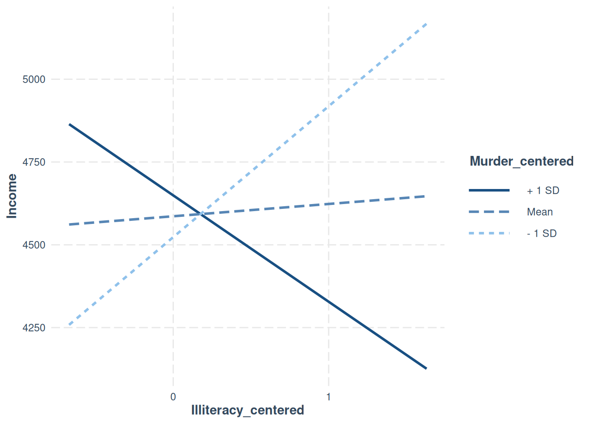
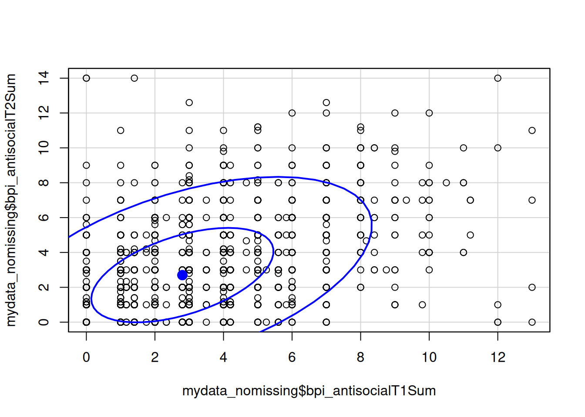
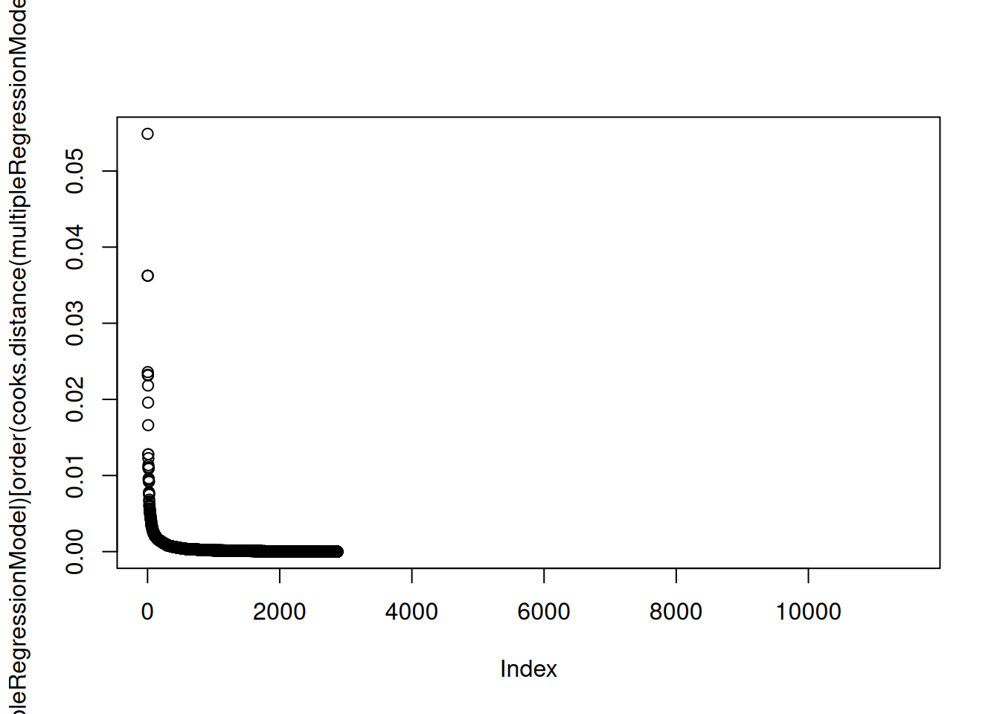

Regression
1 Preamble
1.1 Install Libraries
#install.packages("remotes")
#remotes::install_github("DevPsyLab/petersenlab")1.2 Load Libraries
library("petersenlab")
library("MASS")
library("tidyverse")
library("psych")
library("rms")
library("robustbase")
library("brms")
library("cvTools")
library("car")
library("mgcv")
library("AER")
library("foreign")
library("olsrr")
library("quantreg")
library("mblm")
library("effects")
library("correlation")
library("interactions")
library("lavaan")
library("regtools")
library("mice")
library("XICOR")
library("cocor")
library("effectsize")
library("rockchalk")
library("yhat")2 Import Data
mydata <- read.csv("https://osf.io/8syp5/download")3 Data Preparation
mydata$countVariable <- as.integer(mydata$bpi_antisocialT2Sum)
mydata$orderedVariable <- factor(mydata$countVariable, ordered = TRUE)
mydata$female <- NA
mydata$female[which(mydata$sex == "male")] <- 0
mydata$female[which(mydata$sex == "female")] <- 14 Linear Regression
4.1 Linear regression model
multipleRegressionModel <- lm(
bpi_antisocialT2Sum ~ bpi_antisocialT1Sum + bpi_anxiousDepressedSum,
data = mydata,
na.action = na.exclude)
summary(multipleRegressionModel)
Call:
lm(formula = bpi_antisocialT2Sum ~ bpi_antisocialT1Sum + bpi_anxiousDepressedSum,
data = mydata, na.action = na.exclude)
Residuals:
Min 1Q Median 3Q Max
-8.3755 -1.2337 -0.2212 0.9911 12.8017
Coefficients:
Estimate Std. Error t value Pr(>|t|)
(Intercept) 1.19830 0.05983 20.029 < 2e-16 ***
bpi_antisocialT1Sum 0.46553 0.01858 25.049 < 2e-16 ***
bpi_anxiousDepressedSum 0.16075 0.02916 5.513 3.83e-08 ***
---
Signif. codes: 0 '***' 0.001 '**' 0.01 '*' 0.05 '.' 0.1 ' ' 1
Residual standard error: 1.979 on 2871 degrees of freedom
(8656 observations deleted due to missingness)
Multiple R-squared: 0.262, Adjusted R-squared: 0.2615
F-statistic: 509.6 on 2 and 2871 DF, p-value: < 2.2e-16confint(multipleRegressionModel) 2.5 % 97.5 %
(Intercept) 1.0809881 1.3156128
bpi_antisocialT1Sum 0.4290884 0.5019688
bpi_anxiousDepressedSum 0.1035825 0.2179258print(effectsize::standardize_parameters(multipleRegressionModel), digits = 2)# Standardization method: refit
Parameter | Std. Coef. | 95% CI
----------------------------------------------------
(Intercept) | 1.62e-16 | [-0.03, 0.03]
bpi antisocialT1Sum | 0.46 | [ 0.42, 0.49]
bpi anxiousDepressedSum | 0.10 | [ 0.06, 0.14]4.1.1 Remove missing data
multipleRegressionModelNoMissing <- lm(
bpi_antisocialT2Sum ~ bpi_antisocialT1Sum + bpi_anxiousDepressedSum,
data = mydata,
na.action = na.omit)
multipleRegressionModelNoMissing <- lm(
bpi_antisocialT2Sum ~ bpi_antisocialT1Sum + bpi_anxiousDepressedSum,
data = mydata %>% select(bpi_antisocialT2Sum, bpi_antisocialT1Sum, bpi_anxiousDepressedSum) %>% na.omit)4.2 Linear regression model on correlation/covariance matrix (for pairwise deletion)
multipleRegressionModelPairwise <- psych::setCor(
y = "bpi_antisocialT2Sum",
x = c("bpi_antisocialT1Sum","bpi_anxiousDepressedSum"),
data = cov(mydata[,c("bpi_antisocialT2Sum","bpi_antisocialT1Sum","bpi_anxiousDepressedSum")], use = "pairwise.complete.obs"),
n.obs = nrow(mydata))
summary(multipleRegressionModelPairwise)
Multiple Regression from matrix input
psych::setCor(y = "bpi_antisocialT2Sum", x = c("bpi_antisocialT1Sum",
"bpi_anxiousDepressedSum"), data = cov(mydata[, c("bpi_antisocialT2Sum",
"bpi_antisocialT1Sum", "bpi_anxiousDepressedSum")], use = "pairwise.complete.obs"),
n.obs = nrow(mydata))
Multiple Regression from matrix input
Beta weights
bpi_antisocialT2Sum
bpi_antisocialT1Sum 0.46
bpi_anxiousDepressedSum 0.09
Multiple R
bpi_antisocialT2Sum
0.51
Multiple R2
bpi_antisocialT2Sum
0.26
Cohen's set correlation R2
[1] 0.26
Squared Canonical Correlations
NULLmultipleRegressionModelPairwise[c("coefficients","se","Probability","R2","shrunkenR2")]$coefficients
bpi_antisocialT2Sum
bpi_antisocialT1Sum 0.4560961
bpi_anxiousDepressedSum 0.0899642
$se
bpi_antisocialT2Sum
bpi_antisocialT1Sum 0.009253718
bpi_anxiousDepressedSum 0.009253718
$Probability
bpi_antisocialT2Sum
bpi_antisocialT1Sum 0.000000e+00
bpi_anxiousDepressedSum 2.959352e-22
$R2
bpi_antisocialT2Sum
0.256918
$shrunkenR2
bpi_antisocialT2Sum
0.256789 4.3 Linear regression model with robust covariance matrix (rms)
rmsMultipleRegressionModel <- robcov(ols(
bpi_antisocialT2Sum ~ bpi_antisocialT1Sum + bpi_anxiousDepressedSum,
data = mydata,
x = TRUE,
y = TRUE))
rmsMultipleRegressionModelFrequencies of Missing Values Due to Each Variable
bpi_antisocialT2Sum bpi_antisocialT1Sum bpi_anxiousDepressedSum
7501 7613 7616
Linear Regression Model
ols(formula = bpi_antisocialT2Sum ~ bpi_antisocialT1Sum + bpi_anxiousDepressedSum,
data = mydata, x = TRUE, y = TRUE)
Model Likelihood Discrimination
Ratio Test Indexes
Obs 2874 LR chi2 873.09 R2 0.262
sigma1.9786 d.f. 2 R2 adj 0.261
d.f. 2871 Pr(> chi2) 0.0000 g 1.278
Residuals
Min 1Q Median 3Q Max
-8.3755 -1.2337 -0.2212 0.9911 12.8017
Coef S.E. t Pr(>|t|)
Intercept 1.1983 0.0622 19.26 <0.0001
bpi_antisocialT1Sum 0.4655 0.0229 20.30 <0.0001
bpi_anxiousDepressedSum 0.1608 0.0330 4.87 <0.0001 confint(rmsMultipleRegressionModel) 2.5 % 97.5 %
Intercept 1.07631713 1.3202837
bpi_antisocialT1Sum 0.42056957 0.5104877
bpi_anxiousDepressedSum 0.09606644 0.2254418print(effectsize::standardize_parameters(rmsMultipleRegressionModel), digits = 2)# Standardization method: refit
Parameter | Std. Coef. | 95% CI
----------------------------------------------------
Intercept | 1.62e-16 | [-0.03, 0.03]
bpi antisocialT1Sum | 0.46 | [ 0.42, 0.49]
bpi anxiousDepressedSum | 0.10 | [ 0.06, 0.14]4.4 Robust linear regression (MM-type iteratively reweighted least squares regression)
robustLinearRegression <- lmrob(
bpi_antisocialT2Sum ~ bpi_antisocialT1Sum + bpi_anxiousDepressedSum,
data = mydata,
na.action = na.exclude)
summary(robustLinearRegression)
Call:
lmrob(formula = bpi_antisocialT2Sum ~ bpi_antisocialT1Sum + bpi_anxiousDepressedSum,
data = mydata, na.action = na.exclude)
\--> method = "MM"
Residuals:
Min 1Q Median 3Q Max
-8.43518 -1.06680 -0.06707 1.14090 13.05599
Coefficients:
Estimate Std. Error t value Pr(>|t|)
(Intercept) 0.94401 0.05406 17.464 < 2e-16 ***
bpi_antisocialT1Sum 0.49135 0.02237 21.966 < 2e-16 ***
bpi_anxiousDepressedSum 0.15766 0.03102 5.083 3.96e-07 ***
---
Signif. codes: 0 '***' 0.001 '**' 0.01 '*' 0.05 '.' 0.1 ' ' 1
Robust residual standard error: 1.628
(8656 observations deleted due to missingness)
Multiple R-squared: 0.326, Adjusted R-squared: 0.3255
Convergence in 14 IRWLS iterations
Robustness weights:
12 observations c(52,347,354,517,709,766,768,979,1618,2402,2403,2404)
are outliers with |weight| = 0 ( < 3.5e-05);
283 weights are ~= 1. The remaining 2579 ones are summarized as
Min. 1st Qu. Median Mean 3rd Qu. Max.
0.0001311 0.8599000 0.9470000 0.8814000 0.9816000 0.9990000
Algorithmic parameters:
tuning.chi bb tuning.psi refine.tol
1.548e+00 5.000e-01 4.685e+00 1.000e-07
rel.tol scale.tol solve.tol zero.tol
1.000e-07 1.000e-10 1.000e-07 1.000e-10
eps.outlier eps.x warn.limit.reject warn.limit.meanrw
3.479e-05 2.365e-11 5.000e-01 5.000e-01
nResample max.it groups n.group best.r.s
500 50 5 400 2
k.fast.s k.max maxit.scale trace.lev mts
1 200 200 0 1000
compute.rd fast.s.large.n
0 2000
psi subsampling cov
"bisquare" "nonsingular" ".vcov.avar1"
compute.outlier.stats
"SM"
seed : int(0) confint(robustLinearRegression) 2.5 % 97.5 %
(Intercept) 0.83801565 1.0499981
bpi_antisocialT1Sum 0.44749135 0.5352118
bpi_anxiousDepressedSum 0.09683728 0.2184779print(effectsize::standardize_parameters(robustLinearRegression), digits = 2)# Standardization method: refit
Parameter | Std. Coef. | 95% CI
-----------------------------------------------------
(Intercept) | -0.08 | [-0.11, -0.05]
bpi antisocialT1Sum | 0.48 | [ 0.44, 0.52]
bpi anxiousDepressedSum | 0.10 | [ 0.06, 0.14]4.5 Least trimmed squares regression (for removing outliers)
ltsRegression <- robustbase::ltsReg(
bpi_antisocialT2Sum ~ bpi_antisocialT1Sum + bpi_anxiousDepressedSum,
data = mydata,
na.action = na.exclude)
summary(ltsRegression)
Call:
ltsReg.formula(formula = bpi_antisocialT2Sum ~ bpi_antisocialT1Sum +
bpi_anxiousDepressedSum, data = mydata, na.action = na.exclude)
Residuals (from reweighted LS):
Min 1Q Median 3Q Max
-3.9093 -0.8905 0.0000 1.0454 3.9109
Coefficients:
Estimate Std. Error t value Pr(>|t|)
Intercept 0.80574 0.04812 16.746 < 2e-16 ***
bpi_antisocialT1Sum 0.50360 0.01528 32.962 < 2e-16 ***
bpi_anxiousDepressedSum 0.14170 0.02351 6.027 1.9e-09 ***
---
Signif. codes: 0 '***' 0.001 '**' 0.01 '*' 0.05 '.' 0.1 ' ' 1
Residual standard error: 1.541 on 2716 degrees of freedom
Multiple R-Squared: 0.3787, Adjusted R-squared: 0.3783
F-statistic: 827.8 on 2 and 2716 DF, p-value: < 2.2e-16 confint(robustLinearRegression) 2.5 % 97.5 %
(Intercept) 0.83801565 1.0499981
bpi_antisocialT1Sum 0.44749135 0.5352118
bpi_anxiousDepressedSum 0.09683728 0.21847794.6 Bayesian linear regression
bayesianRegularizedRegression <- brms::brm(
bpi_antisocialT2Sum ~ bpi_antisocialT1Sum + bpi_anxiousDepressedSum,
data = mydata,
chains = 4,
iter = 2000,
seed = 52242)summary(bayesianRegularizedRegression) Family: gaussian
Links: mu = identity
Formula: bpi_antisocialT2Sum ~ bpi_antisocialT1Sum + bpi_anxiousDepressedSum
Data: mydata (Number of observations: 2874)
Draws: 4 chains, each with iter = 2000; warmup = 1000; thin = 1;
total post-warmup draws = 4000
Regression Coefficients:
Estimate Est.Error l-95% CI u-95% CI Rhat Bulk_ESS
Intercept 1.20 0.06 1.08 1.32 1.00 4472
bpi_antisocialT1Sum 0.47 0.02 0.43 0.50 1.00 3350
bpi_anxiousDepressedSum 0.16 0.03 0.10 0.22 1.00 3184
Tail_ESS
Intercept 3070
bpi_antisocialT1Sum 3292
bpi_anxiousDepressedSum 2958
Further Distributional Parameters:
Estimate Est.Error l-95% CI u-95% CI Rhat Bulk_ESS Tail_ESS
sigma 1.98 0.03 1.93 2.03 1.00 4104 3454
Draws were sampled using sampling(NUTS). For each parameter, Bulk_ESS
and Tail_ESS are effective sample size measures, and Rhat is the potential
scale reduction factor on split chains (at convergence, Rhat = 1).print(effectsize::standardize_parameters(bayesianRegularizedRegression, method = "basic"), digits = 2)# Standardization method: basic
Component | Parameter | Std. Median | 95% CI
------------------------------------------------------------------
conditional | (Intercept) | 0.00 | [0.00, 0.00]
conditional | bpi_antisocialT1Sum | 0.46 | [0.42, 0.49]
conditional | bpi_anxiousDepressedSum | 0.10 | [0.07, 0.14]
sigma | sigma | 1.98 | [1.93, 2.03]5 Generalized Linear Regression
5.1 Generalized regression model
In this example, we predict a count variable that has a poisson distribution. We could change the distribution.
generalizedRegressionModel <- glm(
countVariable ~ bpi_antisocialT1Sum + bpi_anxiousDepressedSum,
data = mydata,
family = "poisson",
na.action = na.exclude)
summary(generalizedRegressionModel)
Call:
glm(formula = countVariable ~ bpi_antisocialT1Sum + bpi_anxiousDepressedSum,
family = "poisson", data = mydata, na.action = na.exclude)
Coefficients:
Estimate Std. Error z value Pr(>|z|)
(Intercept) 0.459999 0.019650 23.410 < 2e-16 ***
bpi_antisocialT1Sum 0.141577 0.004891 28.948 < 2e-16 ***
bpi_anxiousDepressedSum 0.047567 0.008036 5.919 3.23e-09 ***
---
Signif. codes: 0 '***' 0.001 '**' 0.01 '*' 0.05 '.' 0.1 ' ' 1
(Dispersion parameter for poisson family taken to be 1)
Null deviance: 5849.4 on 2873 degrees of freedom
Residual deviance: 4562.6 on 2871 degrees of freedom
(8656 observations deleted due to missingness)
AIC: 11482
Number of Fisher Scoring iterations: 5confint(generalizedRegressionModel)Waiting for profiling to be done... 2.5 % 97.5 %
(Intercept) 0.42136094 0.49838751
bpi_antisocialT1Sum 0.13196544 0.15113708
bpi_anxiousDepressedSum 0.03177425 0.06327445print(effectsize::standardize_parameters(generalizedRegressionModel), digits = 2)# Standardization method: refit
Parameter | Std. Coef. | 95% CI
---------------------------------------------------
(Intercept) | 0.91 | [0.89, 0.94]
bpi antisocialT1Sum | 0.32 | [0.30, 0.34]
bpi anxiousDepressedSum | 0.07 | [0.05, 0.09]
- Response is unstandardized.5.2 Generalized regression model (rms)
In this example, we predict a count variable that has a poisson distribution. We could change the distribution.
rmsGeneralizedRegressionModel <- rms::Glm(
countVariable ~ bpi_antisocialT1Sum + bpi_anxiousDepressedSum,
data = mydata,
x = TRUE,
y = TRUE,
family = "poisson")
rmsGeneralizedRegressionModelFrequencies of Missing Values Due to Each Variable
countVariable bpi_antisocialT1Sum bpi_anxiousDepressedSum
7501 7613 7616
General Linear Model
rms::Glm(formula = countVariable ~ bpi_antisocialT1Sum + bpi_anxiousDepressedSum,
family = "poisson", data = mydata, x = TRUE, y = TRUE)
Model Likelihood
Ratio Test
Obs2874 LR chi2 1286.72
Residual d.f.2871 d.f. 2
g 0.387 Pr(> chi2) <0.0001
Coef S.E. Wald Z Pr(>|Z|)
Intercept 0.4600 0.0196 23.41 <0.0001
bpi_antisocialT1Sum 0.1416 0.0049 28.95 <0.0001
bpi_anxiousDepressedSum 0.0476 0.0080 5.92 <0.0001 confint(rmsGeneralizedRegressionModel)Waiting for profiling to be done...Error in summary.rms(fitted): adjustment values not defined here or with datadist for bpi_antisocialT1Sum bpi_anxiousDepressedSumprint(effectsize::standardize_parameters(rmsGeneralizedRegressionModel), digits = 2)# Standardization method: refit
Parameter | Std. Coef. | 95% CI
---------------------------------------------------
Intercept | 0.91 | [0.89, 0.94]
bpi antisocialT1Sum | 0.32 | [0.30, 0.34]
bpi anxiousDepressedSum | 0.07 | [0.05, 0.09]
- Response is unstandardized.5.3 Bayesian generalized linear model
In this example, we predict a count variable that has a poisson
distribution. We could change the distribution. For example, we could
use Gamma regression, family = Gamma, when the response
variable is continuous and positive, and the coefficient of
variation–rather than the variance–is constant.
bayesianGeneralizedLinearRegression <- brm(
countVariable ~ bpi_antisocialT1Sum + bpi_anxiousDepressedSum,
data = mydata,
family = poisson,
chains = 4,
seed = 52242,
iter = 2000)summary(bayesianGeneralizedLinearRegression) Family: poisson
Links: mu = log
Formula: countVariable ~ bpi_antisocialT1Sum + bpi_anxiousDepressedSum
Data: mydata (Number of observations: 2874)
Draws: 4 chains, each with iter = 2000; warmup = 1000; thin = 1;
total post-warmup draws = 4000
Regression Coefficients:
Estimate Est.Error l-95% CI u-95% CI Rhat Bulk_ESS
Intercept 0.46 0.02 0.42 0.50 1.00 3095
bpi_antisocialT1Sum 0.14 0.00 0.13 0.15 1.00 2776
bpi_anxiousDepressedSum 0.05 0.01 0.03 0.06 1.00 2620
Tail_ESS
Intercept 2987
bpi_antisocialT1Sum 2762
bpi_anxiousDepressedSum 2689
Draws were sampled using sampling(NUTS). For each parameter, Bulk_ESS
and Tail_ESS are effective sample size measures, and Rhat is the potential
scale reduction factor on split chains (at convergence, Rhat = 1).print(effectsize::standardize_parameters(bayesianGeneralizedLinearRegression, method = "basic"), digits = 2)# Standardization method: basic
Parameter | Std. Median | 95% CI
----------------------------------------------------
(Intercept) | 0.00 | [0.00, 0.00]
bpi_antisocialT1Sum | 0.32 | [0.30, 0.34]
bpi_anxiousDepressedSum | 0.07 | [0.05, 0.09]
- Response is unstandardized.5.4 Robust generalized regression
robustGeneralizedRegression <- robustbase::glmrob(
countVariable ~ bpi_antisocialT1Sum + bpi_anxiousDepressedSum,
data = mydata,
family = "poisson",
na.action = na.exclude)
summary(robustGeneralizedRegression)
Call: robustbase::glmrob(formula = countVariable ~ bpi_antisocialT1Sum + bpi_anxiousDepressedSum, family = "poisson", data = mydata, na.action = na.exclude)
Coefficients:
Estimate Std. Error z value Pr(>|z|)
(Intercept) 0.365934 0.020794 17.598 < 2e-16 ***
bpi_antisocialT1Sum 0.156275 0.005046 30.969 < 2e-16 ***
bpi_anxiousDepressedSum 0.050526 0.008332 6.064 1.32e-09 ***
---
Signif. codes: 0 '***' 0.001 '**' 0.01 '*' 0.05 '.' 0.1 ' ' 1
Robustness weights w.r * w.x:
2273 weights are ~= 1. The remaining 601 ones are summarized as
Min. 1st Qu. Median Mean 3rd Qu. Max.
0.1286 0.5550 0.7574 0.7183 0.8874 0.9982
Number of observations: 2874
Fitted by method 'Mqle' (in 5 iterations)
(Dispersion parameter for poisson family taken to be 1)
No deviance values available
Algorithmic parameters:
acc tcc
0.0001 1.3450
maxit
50
test.acc
"coef" confint(robustGeneralizedRegression)Waiting for profiling to be done...Error in glm.control(acc = 1e-04, test.acc = "coef", maxit = 50, tcc = 1.345): unused arguments (acc = 1e-04, test.acc = "coef", tcc = 1.345)print(effectsize::standardize_parameters(robustGeneralizedRegression), digits = 2)# Standardization method: refit
Parameter | Std. Coef. | 95% CI
---------------------------------------------------
(Intercept) | 0.87 | [0.84, 0.89]
bpi antisocialT1Sum | 0.35 | [0.33, 0.38]
bpi anxiousDepressedSum | 0.07 | [0.05, 0.10]
- Response is unstandardized.5.5 Ordinal regression model
ordinalRegressionModel1 <- MASS::polr(
orderedVariable ~ bpi_antisocialT1Sum + bpi_anxiousDepressedSum,
data = mydata)
ordinalRegressionModel2 <- rms::lrm(
orderedVariable ~ bpi_antisocialT1Sum + bpi_anxiousDepressedSum,
data = mydata,
x = TRUE,
y = TRUE)
ordinalRegressionModel3 <- rms::orm(
orderedVariable ~ bpi_antisocialT1Sum + bpi_anxiousDepressedSum,
data = mydata,
x = TRUE,
y = TRUE)
summary(ordinalRegressionModel1)
Re-fitting to get HessianCall:
MASS::polr(formula = orderedVariable ~ bpi_antisocialT1Sum +
bpi_anxiousDepressedSum, data = mydata)
Coefficients:
Value Std. Error t value
bpi_antisocialT1Sum 0.4404 0.01862 23.647
bpi_anxiousDepressedSum 0.1427 0.02615 5.457
Intercepts:
Value Std. Error t value
0|1 -0.6001 0.0630 -9.5185
1|2 0.6766 0.0585 11.5656
2|3 1.5801 0.0634 24.9191
3|4 2.4110 0.0720 33.4816
4|5 3.1617 0.0825 38.3006
5|6 3.8560 0.0949 40.6120
6|7 4.5367 0.1106 41.0316
7|8 5.1667 0.1291 40.0147
8|9 5.8129 0.1545 37.6263
9|10 6.5364 0.1962 33.3193
10|11 7.1835 0.2513 28.5820
11|12 7.8469 0.3331 23.5566
12|14 8.7818 0.5113 17.1741
Residual Deviance: 11088.49
AIC: 11118.49
(8656 observations deleted due to missingness)confint(ordinalRegressionModel1)Waiting for profiling to be done...
Re-fitting to get Hessian 2.5 % 97.5 %
bpi_antisocialT1Sum 0.40403039 0.4770422
bpi_anxiousDepressedSum 0.09149919 0.1940080ordinalRegressionModel2Frequencies of Missing Values Due to Each Variable
orderedVariable bpi_antisocialT1Sum bpi_anxiousDepressedSum
7501 7613 7616
Logistic Regression Model
rms::lrm(formula = orderedVariable ~ bpi_antisocialT1Sum + bpi_anxiousDepressedSum,
data = mydata, x = TRUE, y = TRUE)
Frequencies of Responses
0 1 2 3 4 5 6 7 8 9 10 11 12 14
455 597 527 444 313 205 133 80 52 33 16 9 6 4
Model Likelihood Discrimination Rank Discrim.
Ratio Test Indexes Indexes
Obs 2874 LR chi2 881.26 R2 0.268 C 0.705
max |deriv| 6e-06 d.f. 2 R2(2,2874)0.264 Dxy 0.410
Pr(> chi2) <0.0001 R2(2,2803.4)0.269 gamma 0.426
Brier 0.195 tau-a 0.350
Coef S.E. Wald Z Pr(>|Z|)
bpi_antisocialT1Sum 0.4404 0.0186 23.65 <0.0001
bpi_anxiousDepressedSum 0.1427 0.0261 5.46 <0.0001 print(effectsize::standardize_parameters(ordinalRegressionModel2), digits = 2)# Standardization method: refit
Parameter | Std. Coef. | 95% CI
-----------------------------------------------------
y>=1 | 2.01 | [ 1.90, 2.12]
y>=2 | 0.73 | [ 0.65, 0.81]
y>=3 | -0.17 | [-0.25, -0.09]
y>=4 | -1.00 | [-1.09, -0.91]
y>=5 | -1.75 | [-1.86, -1.65]
y>=6 | -2.45 | [-2.58, -2.32]
y>=7 | -3.13 | [-3.29, -2.97]
y>=8 | -3.76 | [-3.96, -3.56]
y>=9 | -4.40 | [-4.66, -4.14]
y>=10 | -5.13 | [-5.48, -4.78]
y>=11 | -5.78 | [-6.24, -5.31]
y>=12 | -6.44 | [-7.07, -5.81]
y>=14 | -7.37 | [-8.36, -6.39]
bpi antisocialT1Sum | 0.99 | [ 0.91, 1.08]
bpi anxiousDepressedSum | 0.21 | [ 0.13, 0.28]
- Response is unstandardized.ordinalRegressionModel3Frequencies of Missing Values Due to Each Variable
orderedVariable bpi_antisocialT1Sum bpi_anxiousDepressedSum
7501 7613 7616
Logistic (Proportional Odds) Ordinal Regression Model
rms::orm(formula = orderedVariable ~ bpi_antisocialT1Sum + bpi_anxiousDepressedSum,
data = mydata, x = TRUE, y = TRUE)
Frequencies of Responses
0 1 2 3 4 5 6 7 8 9 10 11 12 14
455 597 527 444 313 205 133 80 52 33 16 9 6 4
Model Likelihood Discrimination Rank Discrim.
Ratio Test Indexes Indexes
Obs 2874 LR chi2 881.26 R2 0.268 rho 0.506
ESS 2803.4 d.f. 2 R2(2,2874) 0.264 Dxy 0.410
Distinct Y 14 Pr(> chi2) <0.0001 R2(2,2803.4) 0.269
Median Y 3 Score chi2 916.79 |Pr(Y>=median)-0.5| 0.188
max |deriv| 2e-12 Pr(> chi2) <0.0001
Coef S.E. Wald Z Pr(>|Z|)
bpi_antisocialT1Sum 0.4404 0.0186 23.65 <0.0001
bpi_anxiousDepressedSum 0.1427 0.0261 5.46 <0.0001 confint(ordinalRegressionModel3) 2.5 % 97.5 %
y>=1 NA NA
y>=2 -0.79129972 -0.5619711
y>=3 NA NA
y>=4 NA NA
y>=5 NA NA
y>=6 NA NA
y>=7 NA NA
y>=8 NA NA
y>=9 NA NA
y>=10 NA NA
y>=11 NA NA
y>=12 NA NA
y>=14 NA NA
bpi_antisocialT1Sum 0.40390078 0.4769035
bpi_anxiousDepressedSum 0.09143921 0.1939303print(effectsize::standardize_parameters(ordinalRegressionModel3), digits = 2)# Standardization method: refit
Parameter | Std. Coef. | 95% CI
---------------------------------------------------
y>=2 | 0.73 | [0.65, 0.81]
bpi antisocialT1Sum | 0.99 | [0.91, 1.08]
bpi anxiousDepressedSum | 0.21 | [0.13, 0.28]
- Response is unstandardized.5.6 Bayesian ordinal regression model
bayesianOrdinalRegression <- brm(
orderedVariable ~ bpi_antisocialT1Sum + bpi_anxiousDepressedSum,
data = mydata,
family = cumulative(),
chains = 4,
seed = 52242,
iter = 2000)summary(bayesianOrdinalRegression) Family: cumulative
Links: mu = logit
Formula: orderedVariable ~ bpi_antisocialT1Sum + bpi_anxiousDepressedSum
Data: mydata (Number of observations: 2874)
Draws: 4 chains, each with iter = 2000; warmup = 1000; thin = 1;
total post-warmup draws = 4000
Regression Coefficients:
Estimate Est.Error l-95% CI u-95% CI Rhat Bulk_ESS
Intercept[1] -0.60 0.06 -0.73 -0.48 1.00 4659
Intercept[2] 0.67 0.06 0.55 0.79 1.00 6134
Intercept[3] 1.57 0.06 1.45 1.70 1.00 5916
Intercept[4] 2.40 0.07 2.26 2.54 1.00 5305
Intercept[5] 3.15 0.08 2.99 3.31 1.00 4846
Intercept[6] 3.84 0.09 3.66 4.03 1.00 4741
Intercept[7] 4.52 0.11 4.31 4.74 1.00 4796
Intercept[8] 5.15 0.13 4.90 5.40 1.00 4908
Intercept[9] 5.79 0.15 5.50 6.11 1.00 5172
Intercept[10] 6.51 0.20 6.14 6.90 1.00 5196
Intercept[11] 7.17 0.25 6.69 7.69 1.00 5867
Intercept[12] 7.87 0.34 7.25 8.56 1.00 5503
Intercept[13] 8.91 0.53 7.99 10.06 1.00 5868
bpi_antisocialT1Sum 0.44 0.02 0.40 0.48 1.00 4321
bpi_anxiousDepressedSum 0.14 0.03 0.09 0.19 1.00 4514
Tail_ESS
Intercept[1] 3538
Intercept[2] 3487
Intercept[3] 3551
Intercept[4] 3532
Intercept[5] 3866
Intercept[6] 3599
Intercept[7] 3222
Intercept[8] 3125
Intercept[9] 2991
Intercept[10] 3098
Intercept[11] 3043
Intercept[12] 2906
Intercept[13] 2873
bpi_antisocialT1Sum 2945
bpi_anxiousDepressedSum 3156
Further Distributional Parameters:
Estimate Est.Error l-95% CI u-95% CI Rhat Bulk_ESS Tail_ESS
disc 1.00 0.00 1.00 1.00 NA NA NA
Draws were sampled using sampling(NUTS). For each parameter, Bulk_ESS
and Tail_ESS are effective sample size measures, and Rhat is the potential
scale reduction factor on split chains (at convergence, Rhat = 1).print(effectsize::standardize_parameters(bayesianOrdinalRegression, method = "basic"), digits = 2)# Standardization method: basic
Parameter | Std. Median | 95% CI
------------------------------------------------------
Intercept[1] | 0.00 | [ 0.00, 0.00]
Intercept[2] | 1.51 | [ 1.25, 1.78]
Intercept[3] | 2.26 | [ 2.08, 2.45]
Intercept[4] | 2.40 | [ 2.26, 2.54]
Intercept[5] | 3.15 | [ 2.99, 3.31]
Intercept[6] | 3.84 | [ 3.66, 4.03]
Intercept[7] | 4.52 | [ 4.31, 4.74]
Intercept[8] | 5.14 | [ 4.90, 5.40]
Intercept[9] | 5.78 | [ 5.50, 6.11]
Intercept[10] | 6.50 | [ 6.14, 6.90]
Intercept[11] | 7.15 | [ 6.69, 7.69]
Intercept[12] | 7.84 | [ 7.25, 8.56]
Intercept[13] | 8.87 | [ 7.99, 10.06]
bpi_antisocialT1Sum | 0.44 | [ 0.40, 0.48]
bpi_anxiousDepressedSum | 0.14 | [ 0.09, 0.19]
- Response is unstandardized.5.7 Bayesian count regression model
bayesianCountRegression <- brm(
countVariable ~ bpi_antisocialT1Sum + bpi_anxiousDepressedSum,
data = mydata,
family = "poisson",
chains = 4,
seed = 52242,
iter = 2000)summary(bayesianCountRegression) Family: poisson
Links: mu = log
Formula: countVariable ~ bpi_antisocialT1Sum + bpi_anxiousDepressedSum
Data: mydata (Number of observations: 2874)
Draws: 4 chains, each with iter = 2000; warmup = 1000; thin = 1;
total post-warmup draws = 4000
Regression Coefficients:
Estimate Est.Error l-95% CI u-95% CI Rhat Bulk_ESS
Intercept 0.46 0.02 0.42 0.50 1.00 3095
bpi_antisocialT1Sum 0.14 0.00 0.13 0.15 1.00 2776
bpi_anxiousDepressedSum 0.05 0.01 0.03 0.06 1.00 2620
Tail_ESS
Intercept 2987
bpi_antisocialT1Sum 2762
bpi_anxiousDepressedSum 2689
Draws were sampled using sampling(NUTS). For each parameter, Bulk_ESS
and Tail_ESS are effective sample size measures, and Rhat is the potential
scale reduction factor on split chains (at convergence, Rhat = 1).print(effectsize::standardize_parameters(bayesianCountRegression, method = "basic"), digits = 2)# Standardization method: basic
Parameter | Std. Median | 95% CI
----------------------------------------------------
(Intercept) | 0.00 | [0.00, 0.00]
bpi_antisocialT1Sum | 0.32 | [0.30, 0.34]
bpi_anxiousDepressedSum | 0.07 | [0.05, 0.09]
- Response is unstandardized.5.8 Logistic regression model (rms)
logisticRegressionModel <- rms::robcov(rms::lrm(
female ~ bpi_antisocialT1Sum + bpi_anxiousDepressedSum,
data = mydata,
x = TRUE,
y = TRUE))
logisticRegressionModelFrequencies of Missing Values Due to Each Variable
female bpi_antisocialT1Sum bpi_anxiousDepressedSum
2 7613 7616
Logistic Regression Model
rms::lrm(formula = female ~ bpi_antisocialT1Sum + bpi_anxiousDepressedSum,
data = mydata, x = TRUE, y = TRUE)
Model Likelihood Discrimination Rank Discrim.
Ratio Test Indexes Indexes
Obs 3914 LR chi2 66.63 R2 0.023 C 0.571
0 1965 d.f. 2 R2(2,3914)0.016 Dxy 0.142
1 1949 Pr(> chi2) <0.0001 R2(2,2935.5)0.022 gamma 0.147
max |deriv| 1e-07 Brier 0.246 tau-a 0.071
Coef S.E. Wald Z Pr(>|Z|)
Intercept 0.3002 0.0529 5.67 <0.0001
bpi_antisocialT1Sum -0.1244 0.0166 -7.48 <0.0001
bpi_anxiousDepressedSum 0.0382 0.0253 1.51 0.1314 confint(logisticRegressionModel)Waiting for profiling to be done...Error in summary.rms(fitted): adjustment values not defined here or with datadist for bpi_antisocialT1Sum bpi_anxiousDepressedSumprint(effectsize::standardize_parameters(logisticRegressionModel), digits = 2)# Standardization method: refit
Parameter | Std. Coef. | 95% CI
-----------------------------------------------------
Intercept | -9.88e-03 | [-0.07, 0.05]
bpi antisocialT1Sum | -0.29 | [-0.36, -0.21]
bpi anxiousDepressedSum | 0.06 | [-0.02, 0.13]
- Response is unstandardized.5.9 Bayesian logistic regression model
bayesianLogisticRegression <- brm(
female ~ bpi_antisocialT1Sum + bpi_anxiousDepressedSum,
data = mydata,
family = bernoulli,
chains = 4,
seed = 52242,
iter = 2000)summary(bayesianLogisticRegression) Family: bernoulli
Links: mu = logit
Formula: female ~ bpi_antisocialT1Sum + bpi_anxiousDepressedSum
Data: mydata (Number of observations: 3914)
Draws: 4 chains, each with iter = 2000; warmup = 1000; thin = 1;
total post-warmup draws = 4000
Regression Coefficients:
Estimate Est.Error l-95% CI u-95% CI Rhat Bulk_ESS
Intercept 0.30 0.05 0.20 0.41 1.00 4125
bpi_antisocialT1Sum -0.13 0.02 -0.16 -0.09 1.00 2943
bpi_anxiousDepressedSum 0.04 0.03 -0.01 0.09 1.00 3084
Tail_ESS
Intercept 3269
bpi_antisocialT1Sum 2857
bpi_anxiousDepressedSum 2730
Draws were sampled using sampling(NUTS). For each parameter, Bulk_ESS
and Tail_ESS are effective sample size measures, and Rhat is the potential
scale reduction factor on split chains (at convergence, Rhat = 1).print(effectsize::standardize_parameters(bayesianLogisticRegression, method = "basic"), digits = 2)# Standardization method: basic
Parameter | Std. Median | 95% CI
------------------------------------------------------
(Intercept) | 0.00 | [ 0.00, 0.00]
bpi_antisocialT1Sum | -0.29 | [-0.36, -0.22]
bpi_anxiousDepressedSum | 0.06 | [-0.02, 0.13]
- Response is unstandardized.6 Hierarchical Linear Regression
model1 <- lm(
bpi_antisocialT2Sum ~ bpi_antisocialT1Sum,
data = mydata %>% select(bpi_antisocialT2Sum, bpi_antisocialT1Sum, bpi_anxiousDepressedSum) %>% na.omit,
na.action = na.exclude)
model2 <- lm(
bpi_antisocialT2Sum ~ bpi_antisocialT1Sum + bpi_anxiousDepressedSum,
data = mydata %>% select(bpi_antisocialT2Sum, bpi_antisocialT1Sum, bpi_anxiousDepressedSum) %>% na.omit,
na.action = na.exclude)
summary(model2)$adj.r.squared[1] 0.2614694anova(model1, model2)summary(model2)$adj.r.squared - summary(model1)$adj.r.squared[1] 0.0075593017 Moderated Multiple Regression
When testing for the possibility of moderation/interaction, it is
first important to think about what shape the interaction might take. If
you expect a bilinear interaction (i.e., the slope of the regression
line between X and Y changes as a
linear function of a third variable, Z), it is
appropriate to treat the moderator as continuous in moderated multiple
regression. However, if you expect that the interaction might take a
different form (e.g., a threshold effect), you may need to consider
other approaches, such as using categorical variables, polynomial
interactions, spline functions, generalized additive models (GAMs), or
machine learning.
For information on the (low) power to detect interactions and how to improve it, see: https://isaactpetersen.github.io/Principles-Psychological-Assessment/reliability.html#productTerm-reliability
The examples below use the interactions package in R. https://cran.r-project.org/web/packages/interactions/vignettes/interactions.html
(archived at https://perma.cc/P34H-7BH3)
states <- as.data.frame(state.x77)
states$HS.Grad <- states$`HS Grad`7.1 Mean Center Predictors
Make sure to mean-center or orthogonalize predictors before computing the interaction term.
states$Illiteracy_centered <- scale(states$Illiteracy, scale = FALSE)
states$Murder_centered <- scale(states$Murder, scale = FALSE)7.2 Model
interactionModel <- lm(
Income ~ Illiteracy_centered + Murder_centered + Illiteracy_centered:Murder_centered + HS.Grad,
data = states)
summary(interactionModel)
Call:
lm(formula = Income ~ Illiteracy_centered + Murder_centered +
Illiteracy_centered:Murder_centered + HS.Grad, data = states)
Residuals:
Min 1Q Median 3Q Max
-916.27 -244.42 28.42 228.14 1221.16
Coefficients:
Estimate Std. Error t value Pr(>|t|)
(Intercept) 2421.46 594.36 4.074 0.000185 ***
Illiteracy_centered 37.12 192.56 0.193 0.848005
Murder_centered 17.07 25.52 0.669 0.507085
HS.Grad 40.76 10.92 3.733 0.000530 ***
Illiteracy_centered:Murder_centered -97.04 35.86 -2.706 0.009584 **
---
Signif. codes: 0 '***' 0.001 '**' 0.01 '*' 0.05 '.' 0.1 ' ' 1
Residual standard error: 459.5 on 45 degrees of freedom
Multiple R-squared: 0.4864, Adjusted R-squared: 0.4407
F-statistic: 10.65 on 4 and 45 DF, p-value: 3.689e-06print(effectsize::standardize_parameters(interactionModel), digits = 2)# Standardization method: refit
Parameter | Std. Coef. | 95% CI
-------------------------------------------------------------------
(Intercept) | 0.24 | [-0.04, 0.53]
Illiteracy centered | 0.04 | [-0.35, 0.42]
Murder centered | 0.10 | [-0.21, 0.41]
HS Grad | 0.54 | [ 0.25, 0.82]
Illiteracy centered × Murder centered | -0.36 | [-0.62, -0.09]7.3 Plots
interactions::interact_plot(
interactionModel,
pred = Illiteracy_centered,
modx = Murder_centered)
interactions::interact_plot(
interactionModel,
pred = Illiteracy_centered,
modx = Murder_centered,
plot.points = TRUE)
interactions::interact_plot(
interactionModel,
pred = Illiteracy_centered,
modx = Murder_centered,
interval = TRUE)
interactions::johnson_neyman(
interactionModel,
pred = Illiteracy_centered,
modx = Murder_centered,
alpha = .05)JOHNSON-NEYMAN INTERVAL
When Murder_centered is OUTSIDE the interval [-8.13, 4.37], the slope of
Illiteracy_centered is p < .05.
Note: The range of observed values of Murder_centered is [-5.98, 7.72]
7.4 Simple Slopes Analysis
interactions::sim_slopes(
interactionModel,
pred = Illiteracy_centered,
modx = Murder_centered,
johnson_neyman = FALSE)SIMPLE SLOPES ANALYSIS
Slope of Illiteracy_centered when Murder_centered = -3.69154e+00 (- 1 SD):
Est. S.E. t val. p
-------- -------- -------- ------
395.34 274.84 1.44 0.16
Slope of Illiteracy_centered when Murder_centered = -1.24345e-16 (Mean):
Est. S.E. t val. p
------- -------- -------- ------
37.12 192.56 0.19 0.85
Slope of Illiteracy_centered when Murder_centered = 3.69154e+00 (+ 1 SD):
Est. S.E. t val. p
--------- -------- -------- ------
-321.10 183.49 -1.75 0.09interactions::sim_slopes(
interactionModel,
pred = Illiteracy_centered,
modx = Murder_centered,
modx.values = c(0, 5, 10),
johnson_neyman = FALSE)SIMPLE SLOPES ANALYSIS
Slope of Illiteracy_centered when Murder_centered = 0.00:
Est. S.E. t val. p
------- -------- -------- ------
37.12 192.56 0.19 0.85
Slope of Illiteracy_centered when Murder_centered = 5.00:
Est. S.E. t val. p
--------- -------- -------- ------
-448.07 202.17 -2.22 0.03
Slope of Illiteracy_centered when Murder_centered = 10.00:
Est. S.E. t val. p
--------- -------- -------- ------
-933.27 330.10 -2.83 0.017.5 Johnson-Neyman intervals
Indicates all the values of the moderator for which the slope of the predictor is statistically significant.
interactions::sim_slopes(
interactionModel,
pred = Illiteracy_centered,
modx = Murder_centered,
johnson_neyman = TRUE)JOHNSON-NEYMAN INTERVAL
When Murder_centered is OUTSIDE the interval [-8.13, 4.37], the slope of
Illiteracy_centered is p < .05.
Note: The range of observed values of Murder_centered is [-5.98, 7.72]
SIMPLE SLOPES ANALYSIS
Slope of Illiteracy_centered when Murder_centered = -3.69154e+00 (- 1 SD):
Est. S.E. t val. p
-------- -------- -------- ------
395.34 274.84 1.44 0.16
Slope of Illiteracy_centered when Murder_centered = -1.24345e-16 (Mean):
Est. S.E. t val. p
------- -------- -------- ------
37.12 192.56 0.19 0.85
Slope of Illiteracy_centered when Murder_centered = 3.69154e+00 (+ 1 SD):
Est. S.E. t val. p
--------- -------- -------- ------
-321.10 183.49 -1.75 0.09interactions::probe_interaction(
interactionModel,
pred = Illiteracy_centered,
modx = Murder_centered,
cond.int = TRUE,
interval = TRUE,
jnplot = TRUE)JOHNSON-NEYMAN INTERVAL
When Murder_centered is OUTSIDE the interval [-8.13, 4.37], the slope of
Illiteracy_centered is p < .05.
Note: The range of observed values of Murder_centered is [-5.98, 7.72]
SIMPLE SLOPES ANALYSIS
When Murder_centered = -3.69154e+00 (- 1 SD):
Est. S.E. t val. p
---------------------------------- --------- -------- -------- ------
Slope of Illiteracy_centered 395.34 274.84 1.44 0.16
Conditional intercept 4523.23 134.99 33.51 0.00
When Murder_centered = -1.24345e-16 (Mean):
Est. S.E. t val. p
---------------------------------- --------- -------- -------- ------
Slope of Illiteracy_centered 37.12 192.56 0.19 0.85
Conditional intercept 4586.22 85.52 53.63 0.00
When Murder_centered = 3.69154e+00 (+ 1 SD):
Est. S.E. t val. p
---------------------------------- --------- -------- -------- ------
Slope of Illiteracy_centered -321.10 183.49 -1.75 0.09
Conditional intercept 4649.22 118.97 39.08 0.00
8 Comparing Correlations
Fisher’s r-to-z test.
http://comparingcorrelations.org (archived at https://perma.cc/X3EU-24GL)
Independent groups (two different groups):
cocor::cocor.indep.groups(
r1.jk = .7,
r2.hm = .6,
n1 = 305,
n2 = 210,
data.name = c("group1", "group2"),
var.labels = c("age", "intelligence", "age", "intelligence"))
Results of a comparison of two correlations based on independent groups
Comparison between r1.jk (age, intelligence) = 0.7 and r2.hm (age, intelligence) = 0.6
Difference: r1.jk - r2.hm = 0.1
Data: group1: j = age, k = intelligence; group2: h = age, m = intelligence
Group sizes: n1 = 305, n2 = 210
Null hypothesis: r1.jk is equal to r2.hm
Alternative hypothesis: r1.jk is not equal to r2.hm (two-sided)
Alpha: 0.05
fisher1925: Fisher's z (1925)
z = 1.9300, p-value = 0.0536
Null hypothesis retained
zou2007: Zou's (2007) confidence interval
95% confidence interval for r1.jk - r2.hm: -0.0014 0.2082
Null hypothesis retained (Interval includes 0)Dependent groups (same group), overlapping correlation (shares a
variable in common—in this case, the variable age is shared
in both correlations):
cocor::cocor.dep.groups.overlap(
r.jk = .2, # Correlation (age, intelligence)
r.jh = .5, # Correlation (age, shoe size)
r.kh = .1, # Correlation (intelligence, shoe index)
n = 315,
var.labels = c("age", "intelligence", "shoe size"))
Results of a comparison of two overlapping correlations based on dependent groups
Comparison between r.jk (age, intelligence) = 0.2 and r.jh (age, shoe size) = 0.5
Difference: r.jk - r.jh = -0.3
Related correlation: r.kh = 0.1
Data: j = age, k = intelligence, h = shoe size
Group size: n = 315
Null hypothesis: r.jk is equal to r.jh
Alternative hypothesis: r.jk is not equal to r.jh (two-sided)
Alpha: 0.05
pearson1898: Pearson and Filon's z (1898)
z = -4.4807, p-value = 0.0000
Null hypothesis rejected
hotelling1940: Hotelling's t (1940)
t = -4.6314, df = 312, p-value = 0.0000
Null hypothesis rejected
williams1959: Williams' t (1959)
t = -4.4950, df = 312, p-value = 0.0000
Null hypothesis rejected
olkin1967: Olkin's z (1967)
z = -4.4807, p-value = 0.0000
Null hypothesis rejected
dunn1969: Dunn and Clark's z (1969)
z = -4.4412, p-value = 0.0000
Null hypothesis rejected
hendrickson1970: Hendrickson, Stanley, and Hills' (1970) modification of Williams' t (1959)
t = -4.6313, df = 312, p-value = 0.0000
Null hypothesis rejected
steiger1980: Steiger's (1980) modification of Dunn and Clark's z (1969) using average correlations
z = -4.4152, p-value = 0.0000
Null hypothesis rejected
meng1992: Meng, Rosenthal, and Rubin's z (1992)
z = -4.3899, p-value = 0.0000
Null hypothesis rejected
95% confidence interval for r.jk - r.jh: -0.5013 -0.1918
Null hypothesis rejected (Interval does not include 0)
hittner2003: Hittner, May, and Silver's (2003) modification of Dunn and Clark's z (1969) using a backtransformed average Fisher's (1921) Z procedure
z = -4.4077, p-value = 0.0000
Null hypothesis rejected
zou2007: Zou's (2007) confidence interval
95% confidence interval for r.jk - r.jh: -0.4307 -0.1675
Null hypothesis rejected (Interval does not include 0)Dependent groups (same group), non-overlapping correlation (does not share a variable in common):
cocor::cocor.dep.groups.nonoverlap(
r.jk = .2, # Correlation (age, intelligence)
r.hm = .7, # Correlation (body mass index, shoe size)
r.jh = .4, # Correlation (age, body mass index)
r.jm = .5, # Correlation (age, shoe size)
r.kh = .1, # Correlation (intelligence, body mass index)
r.km = .3, # Correlation (intelligence, shoe size)
n = 232,
var.labels = c("age", "intelligence", "body mass index", "shoe size"))
Results of a comparison of two nonoverlapping correlations based on dependent groups
Comparison between r.jk (age, intelligence) = 0.2 and r.hm (body mass index, shoe size) = 0.7
Difference: r.jk - r.hm = -0.5
Related correlations: r.jh = 0.4, r.jm = 0.5, r.kh = 0.1, r.km = 0.3
Data: j = age, k = intelligence, h = body mass index, m = shoe size
Group size: n = 232
Null hypothesis: r.jk is equal to r.hm
Alternative hypothesis: r.jk is not equal to r.hm (two-sided)
Alpha: 0.05
pearson1898: Pearson and Filon's z (1898)
z = -7.1697, p-value = 0.0000
Null hypothesis rejected
dunn1969: Dunn and Clark's z (1969)
z = -7.3134, p-value = 0.0000
Null hypothesis rejected
steiger1980: Steiger's (1980) modification of Dunn and Clark's z (1969) using average correlations
z = -7.3010, p-value = 0.0000
Null hypothesis rejected
raghunathan1996: Raghunathan, Rosenthal, and Rubin's (1996) modification of Pearson and Filon's z (1898)
z = -7.3134, p-value = 0.0000
Null hypothesis rejected
silver2004: Silver, Hittner, and May's (2004) modification of Dunn and Clark's z (1969) using a backtransformed average Fisher's (1921) Z procedure
z = -7.2737, p-value = 0.0000
Null hypothesis rejected
zou2007: Zou's (2007) confidence interval
95% confidence interval for r.jk - r.hm: -0.6375 -0.3629
Null hypothesis rejected (Interval does not include 0)9 Approaches to Handling Missingness
9.1 Listwise deletion
Listwise deletion deletes every row in the data file that has a missing value for one of the model variables.
listwiseDeletionModel <- lm(
bpi_antisocialT2Sum ~ bpi_antisocialT1Sum + bpi_anxiousDepressedSum,
data = mydata,
na.action = na.exclude)
summary(listwiseDeletionModel)
Call:
lm(formula = bpi_antisocialT2Sum ~ bpi_antisocialT1Sum + bpi_anxiousDepressedSum,
data = mydata, na.action = na.exclude)
Residuals:
Min 1Q Median 3Q Max
-8.3755 -1.2337 -0.2212 0.9911 12.8017
Coefficients:
Estimate Std. Error t value Pr(>|t|)
(Intercept) 1.19830 0.05983 20.029 < 2e-16 ***
bpi_antisocialT1Sum 0.46553 0.01858 25.049 < 2e-16 ***
bpi_anxiousDepressedSum 0.16075 0.02916 5.513 3.83e-08 ***
---
Signif. codes: 0 '***' 0.001 '**' 0.01 '*' 0.05 '.' 0.1 ' ' 1
Residual standard error: 1.979 on 2871 degrees of freedom
(8656 observations deleted due to missingness)
Multiple R-squared: 0.262, Adjusted R-squared: 0.2615
F-statistic: 509.6 on 2 and 2871 DF, p-value: < 2.2e-16confint(listwiseDeletionModel) 2.5 % 97.5 %
(Intercept) 1.0809881 1.3156128
bpi_antisocialT1Sum 0.4290884 0.5019688
bpi_anxiousDepressedSum 0.1035825 0.2179258print(effectsize::standardize_parameters(listwiseDeletionModel), digits = 2)# Standardization method: refit
Parameter | Std. Coef. | 95% CI
----------------------------------------------------
(Intercept) | 1.62e-16 | [-0.03, 0.03]
bpi antisocialT1Sum | 0.46 | [ 0.42, 0.49]
bpi anxiousDepressedSum | 0.10 | [ 0.06, 0.14]9.2 Pairwise deletion
Also see here:
- https://stats.stackexchange.com/questions/158366/fit-multiple-regression-model-with-pairwise-deletion-or-on-a-correlation-covari/173002#173002 (archived at https://perma.cc/GH5T-RXD9)
- https://stats.stackexchange.com/questions/299792/r-lm-covariance-matrix-manual-calculation-failure (archived at https://perma.cc/F7EL-AUFZ)
- https://stats.stackexchange.com/questions/107597/is-there-a-way-to-use-the-covariance-matrix-to-find-coefficients-for-multiple-re (archived at https://perma.cc/KU3X-FB2C)
- https://stats.stackexchange.com/questions/105006/how-to-perform-a-bivariate-regression-using-pairwise-deletion-of-missing-values (archived at https://perma.cc/QWQ5-2TLW)
- https://dl.dropboxusercontent.com/s/4sf0et3p47ykctx/MissingPairwise.sps (archived at https://perma.cc/UC4K-2L9T)
Adapted from here: https://stefvanbuuren.name/fimd/sec-simplesolutions.html#sec:pairwise (archived at https://perma.cc/EGU6-3M3Q)
modelData <- mydata[,c("bpi_antisocialT2Sum","bpi_antisocialT1Sum","bpi_anxiousDepressedSum")]
varMeans <- colMeans(modelData, na.rm = TRUE)
varCovariances <- cov(modelData, use = "pairwise")
pairwiseRegression_syntax <- '
bpi_antisocialT2Sum ~ bpi_antisocialT1Sum + bpi_anxiousDepressedSum
bpi_antisocialT2Sum ~~ bpi_antisocialT2Sum
bpi_antisocialT2Sum ~ 1
'
pairwiseRegression_fit <- lavaan::lavaan(
pairwiseRegression_syntax,
sample.mean = varMeans,
sample.cov = varCovariances,
sample.nobs = sum(complete.cases(modelData))
)
summary(
pairwiseRegression_fit,
standardized = TRUE,
rsquare = TRUE)lavaan 0.6-20 ended normally after 1 iteration
Estimator ML
Optimization method NLMINB
Number of model parameters 4
Number of observations 2874
Model Test User Model:
Test statistic 0.000
Degrees of freedom 0
Parameter Estimates:
Standard errors Standard
Information Expected
Information saturated (h1) model Structured
Regressions:
Estimate Std.Err z-value P(>|z|) Std.lv Std.all
bpi_antisocialT2Sum ~
bpi_antsclT1Sm 0.441 0.018 24.611 0.000 0.441 0.456
bp_nxsDprssdSm 0.137 0.028 4.854 0.000 0.137 0.090
Intercepts:
Estimate Std.Err z-value P(>|z|) Std.lv Std.all
.bpi_antsclT2Sm 1.175 0.058 20.125 0.000 1.175 0.523
Variances:
Estimate Std.Err z-value P(>|z|) Std.lv Std.all
.bpi_antsclT2Sm 3.755 0.099 37.908 0.000 3.755 0.743
R-Square:
Estimate
bpi_antsclT2Sm 0.2579.3 Full-information maximum likelihood (FIML)
fimlRegression_syntax <- '
bpi_antisocialT2Sum ~ bpi_antisocialT1Sum + bpi_anxiousDepressedSum
bpi_antisocialT2Sum ~~ bpi_antisocialT2Sum
bpi_antisocialT2Sum ~ 1
'
fimlRegression_fit <- lavaan::lavaan(
fimlRegression_syntax,
data = mydata,
missing = "ML",
)Warning: lavaan->lav_data_full():
7616 cases were deleted due to missing values in exogenous variable(s),
while fixed.x = TRUE.summary(
fimlRegression_fit,
standardized = TRUE,
rsquare = TRUE)lavaan 0.6-20 ended normally after 11 iterations
Estimator ML
Optimization method NLMINB
Number of model parameters 4
Used Total
Number of observations 3914 11530
Number of missing patterns 2
Model Test User Model:
Test statistic 0.000
Degrees of freedom 0
Parameter Estimates:
Standard errors Standard
Information Observed
Observed information based on Hessian
Regressions:
Estimate Std.Err z-value P(>|z|) Std.lv Std.all
bpi_antisocialT2Sum ~
bpi_antsclT1Sm 0.466 0.019 25.062 0.000 0.466 0.466
bp_nxsDprssdSm 0.161 0.029 5.516 0.000 0.161 0.102
Intercepts:
Estimate Std.Err z-value P(>|z|) Std.lv Std.all
.bpi_antsclT2Sm 1.198 0.060 20.039 0.000 1.198 0.516
Variances:
Estimate Std.Err z-value P(>|z|) Std.lv Std.all
.bpi_antsclT2Sm 3.911 0.103 37.908 0.000 3.911 0.725
R-Square:
Estimate
bpi_antsclT2Sm 0.2759.4 Multiple imputation
modelData_imputed <- mice::mice(
modelData,
m = 5,
method = "pmm") # predictive mean matching; can choose among many methods
iter imp variable
1 1 bpi_antisocialT2Sum bpi_antisocialT1Sum bpi_anxiousDepressedSum
1 2 bpi_antisocialT2Sum bpi_antisocialT1Sum bpi_anxiousDepressedSum
1 3 bpi_antisocialT2Sum bpi_antisocialT1Sum bpi_anxiousDepressedSum
1 4 bpi_antisocialT2Sum bpi_antisocialT1Sum bpi_anxiousDepressedSum
1 5 bpi_antisocialT2Sum bpi_antisocialT1Sum bpi_anxiousDepressedSum
2 1 bpi_antisocialT2Sum bpi_antisocialT1Sum bpi_anxiousDepressedSum
2 2 bpi_antisocialT2Sum bpi_antisocialT1Sum bpi_anxiousDepressedSum
2 3 bpi_antisocialT2Sum bpi_antisocialT1Sum bpi_anxiousDepressedSum
2 4 bpi_antisocialT2Sum bpi_antisocialT1Sum bpi_anxiousDepressedSum
2 5 bpi_antisocialT2Sum bpi_antisocialT1Sum bpi_anxiousDepressedSum
3 1 bpi_antisocialT2Sum bpi_antisocialT1Sum bpi_anxiousDepressedSum
3 2 bpi_antisocialT2Sum bpi_antisocialT1Sum bpi_anxiousDepressedSum
3 3 bpi_antisocialT2Sum bpi_antisocialT1Sum bpi_anxiousDepressedSum
3 4 bpi_antisocialT2Sum bpi_antisocialT1Sum bpi_anxiousDepressedSum
3 5 bpi_antisocialT2Sum bpi_antisocialT1Sum bpi_anxiousDepressedSum
4 1 bpi_antisocialT2Sum bpi_antisocialT1Sum bpi_anxiousDepressedSum
4 2 bpi_antisocialT2Sum bpi_antisocialT1Sum bpi_anxiousDepressedSum
4 3 bpi_antisocialT2Sum bpi_antisocialT1Sum bpi_anxiousDepressedSum
4 4 bpi_antisocialT2Sum bpi_antisocialT1Sum bpi_anxiousDepressedSum
4 5 bpi_antisocialT2Sum bpi_antisocialT1Sum bpi_anxiousDepressedSum
5 1 bpi_antisocialT2Sum bpi_antisocialT1Sum bpi_anxiousDepressedSum
5 2 bpi_antisocialT2Sum bpi_antisocialT1Sum bpi_anxiousDepressedSum
5 3 bpi_antisocialT2Sum bpi_antisocialT1Sum bpi_anxiousDepressedSum
5 4 bpi_antisocialT2Sum bpi_antisocialT1Sum bpi_anxiousDepressedSum
5 5 bpi_antisocialT2Sum bpi_antisocialT1Sum bpi_anxiousDepressedSumimputedData_fit <- with(
modelData_imputed,
lm(bpi_antisocialT2Sum ~ bpi_antisocialT1Sum + bpi_anxiousDepressedSum))
imputedData_pooledEstimates <- pool(imputedData_fit)
summary(imputedData_pooledEstimates)10 Squared Semi-Partial Correlation (\(sr^2\))
rockchalk::getDeltaRsquare(multipleRegressionModel)The deltaR-square values: the change in the R-square
observed when a single term is removed.
Same as the square of the 'semi-partial correlation coefficient'
deltaRsquare
bpi_antisocialT1Sum 0.161297120
bpi_anxiousDepressedSum 0.00781372811 Dominance Analysis
parameters::dominance_analysis(multipleRegressionModel)# Dominance Analysis Results
Model R2 Value: 0.262
General Dominance Statistics
Parameter | General Dominance | Percent | Ranks | Subset
---------------------------------------------------------------------------------------
(Intercept) | | | | constant
bpi_antisocialT1Sum | 0.208 | 0.793 | 1 | bpi_antisocialT1Sum
bpi_anxiousDepressedSum | 0.054 | 0.207 | 2 | bpi_anxiousDepressedSum
Conditional Dominance Statistics
Subset | IVs: 1 | IVs: 2
-----------------------------------------
bpi_antisocialT1Sum | 0.254 | 0.161
bpi_anxiousDepressedSum | 0.101 | 0.008
Complete Dominance Designations
Subset | < bpi_antisocialT1Sum | < bpi_anxiousDepressedSum
---------------------------------------------------------------------------
bpi_antisocialT1Sum | | FALSE
bpi_anxiousDepressedSum | TRUE | allPossibleSubsetsRegression <- yhat::aps(
dataMatrix = mydata,
dv = "bpi_antisocialT2Sum",
ivlist = list("bpi_antisocialT1Sum", "bpi_anxiousDepressedSum"))
yhat::dominance(allPossibleSubsetsRegression)$DA
k R2 bpi_antisocialT1Sum.Inc
bpi_antisocialT1Sum 1 0.2541698 NA
bpi_anxiousDepressedSum 1 0.1006864 0.1612971
bpi_antisocialT1Sum,bpi_anxiousDepressedSum 2 0.2619835 NA
bpi_anxiousDepressedSum.Inc
bpi_antisocialT1Sum 0.007813728
bpi_anxiousDepressedSum NA
bpi_antisocialT1Sum,bpi_anxiousDepressedSum NA
$CD
bpi_antisocialT1Sum bpi_anxiousDepressedSum
CD:0 0.2541698 0.100686422
CD:1 0.1612971 0.007813728
$GD
bpi_antisocialT1Sum bpi_anxiousDepressedSum
0.20773347 0.05425008 12 Commonality Analysis
yhat::calc.yhat(multipleRegressionModel)$PredictorMetrics
b Beta r rs rs2 Unique Common CD:0 CD:1
bpi_antisocialT1Sum 0.466 0.456 0.504 0.985 0.970 0.161 0.093 0.254 0.161
bpi_anxiousDepressedSum 0.161 0.100 0.317 0.620 0.384 0.008 0.093 0.101 0.008
Total NA NA NA NA 1.354 0.169 0.186 0.355 0.169
GenDom Pratt RLW
bpi_antisocialT1Sum 0.208 0.230 0.208
bpi_anxiousDepressedSum 0.054 0.032 0.054
Total 0.262 0.262 0.262
$OrderedPredictorMetrics
b Beta r rs rs2 Unique Common CD:0 CD:1 GenDom Pratt
bpi_antisocialT1Sum 1 1 1 1 1 1 1 1 1 1 1
bpi_anxiousDepressedSum 2 2 2 2 2 2 2 2 2 2 2
RLW
bpi_antisocialT1Sum 1
bpi_anxiousDepressedSum 2
$PairedDominanceMetrics
Comp Cond Gen
bpi_antisocialT1Sum>bpi_anxiousDepressedSum 1 1 1
$APSRelatedMetrics
Commonality % Total R2
bpi_antisocialT1Sum 0.161 0.616 0.254
bpi_anxiousDepressedSum 0.008 0.030 0.101
bpi_antisocialT1Sum,bpi_anxiousDepressedSum 0.093 0.354 0.262
Total 0.262 1.000 NA
bpi_antisocialT1Sum.Inc
bpi_antisocialT1Sum NA
bpi_anxiousDepressedSum 0.161
bpi_antisocialT1Sum,bpi_anxiousDepressedSum NA
Total NA
bpi_anxiousDepressedSum.Inc
bpi_antisocialT1Sum 0.008
bpi_anxiousDepressedSum NA
bpi_antisocialT1Sum,bpi_anxiousDepressedSum NA
Total NAallPossibleSubsetsRegression <- yhat::aps(
dataMatrix = mydata,
dv = "bpi_antisocialT2Sum",
ivlist = list("bpi_antisocialT1Sum", "bpi_anxiousDepressedSum"))
yhat::commonality(allPossibleSubsetsRegression) Coefficient % Total
bpi_antisocialT1Sum 0.161297120 0.61567654
bpi_anxiousDepressedSum 0.007813728 0.02982526
bpi_antisocialT1Sum,bpi_anxiousDepressedSum 0.092872694 0.35449820commonalityAnalysis <- yhat::commonalityCoefficients(
dataMatrix = mydata,
dv = "bpi_antisocialT2Sum",
ivlist = list("bpi_antisocialT1Sum", "bpi_anxiousDepressedSum"))
commonalityAnalysis$CC
Coefficient
Unique to bpi_antisocialT1Sum 0.1613
Unique to bpi_anxiousDepressedSum 0.0078
Common to bpi_antisocialT1Sum, and bpi_anxiousDepressedSum 0.0929
Total 0.2620
% Total
Unique to bpi_antisocialT1Sum 61.57
Unique to bpi_anxiousDepressedSum 2.98
Common to bpi_antisocialT1Sum, and bpi_anxiousDepressedSum 35.45
Total 100.00
$CCTotalbyVar
Unique Common Total
bpi_antisocialT1Sum 0.1613 0.0929 0.2542
bpi_anxiousDepressedSum 0.0078 0.0929 0.100713 Model Building Steps
- Examine extent and type of missing data, consider how to handle missing values (multiple imputation, FIML, pairwise deletion, listwise deletion)
- Little’s MCAR test from
mcar_test()function of thenjtierney/naniarpackage - Bayesian handling of missing data: https://cran.r-project.org/web/packages/brms/vignettes/brms_missings.html (archived at https://perma.cc/Z4HT-QXWR)
- Little’s MCAR test from
- Examine descriptive statistics, consider variable transformations
- Examine scatterplot matrix to examine whether associations between predictor and outcomes are linear or nonlinear
- Model building: theory and empiricism (stepwise regression, likelihood ratio tests, k-fold cross validation to check for over-fitting compared to simpler model)
- Test assumptions
- Examine whether predictors have linear association with outcome (Residual Plots, Marginal Model Plots, Added-Variable Plots—check for non-horizontal lines)
- Examine whether residuals have constant variance across levels of outcome and predictors Residual Plots, Spread-Level Plots—check for fan-shaped plot or other increasing/decreasing structure)
- Examine whether predictors show multicollinearity (VIF)
- Examine whether residuals are normally distributed (QQ plot and density plot)
- Examine influence of influential observations (high outlyingness and leverage) on parameter stimates by iteratively removing influential observations and refitting (Added-Variable Plots)
- Handle violated assumptions, select final set of predictors/outcomes and transformation of each
- Use k-fold cross validation to identify the best estimation procedure (OLS, MM, or LTS) on the final model
- Use identified estimation procedure to fit final model and determine the best parameter point estimates
- Calculate bootstrapped estimates to determine the confidence intervals around the parameter estimates of the final model
14 Bootstrapped Estimates
To determine the confidence intervals of parameter estimates
14.1 Linear Regression
multipleRegressionModelBootstrapped <- Boot(multipleRegressionModelNoMissing, R = 1000)
summary(multipleRegressionModelBootstrapped)confint(multipleRegressionModelBootstrapped, level = .95, type = "bca")Warning in confint.boot(multipleRegressionModelBootstrapped, level = 0.95, :
BCa method fails for this problem. Using 'perc' insteadBootstrap percent confidence intervals
2.5 % 97.5 %
(Intercept) 1.07557386 1.3162307
bpi_antisocialT1Sum 0.42088386 0.5122575
bpi_anxiousDepressedSum 0.09669555 0.2289592hist(multipleRegressionModelBootstrapped)Warning in confint.boot(x, type = ci, level = level): BCa method fails for this
problem. Using 'perc' instead14.2 Generalized Regression
generalizedRegressionModelBootstrapped <- Boot(multipleRegressionModelNoMissing, R = 1000)
summary(generalizedRegressionModelBootstrapped)confint(generalizedRegressionModelBootstrapped, level = .95, type = "bca")Warning in confint.boot(generalizedRegressionModelBootstrapped, level = 0.95, :
BCa method fails for this problem. Using 'perc' insteadBootstrap percent confidence intervals
2.5 % 97.5 %
(Intercept) 1.0758093 1.3242604
bpi_antisocialT1Sum 0.4201698 0.5109966
bpi_anxiousDepressedSum 0.0911406 0.2236939hist(generalizedRegressionModelBootstrapped)Warning in confint.boot(x, type = ci, level = level): BCa method fails for this
problem. Using 'perc' instead
15 Cross Validation
To examine degree of prediction error and over-fitting to determine best model
https://stats.stackexchange.com/questions/103459/how-do-i-know-which-method-of-cross-validation-is-best (archived at https://perma.cc/38BL-KLRJ)
15.1 K-fold cross validation
kFolds <- 10
replications <- 20
folds <- cvFolds(nrow(mydata), K = kFolds, R = replications)
fitLm <- lm(
bpi_antisocialT2Sum ~ bpi_antisocialT1Sum + bpi_anxiousDepressedSum,
data = mydata,
na.action = "na.exclude")
fitLmrob <- lmrob(
bpi_antisocialT2Sum ~ bpi_antisocialT1Sum + bpi_anxiousDepressedSum,
data = mydata,
na.action = "na.exclude")
fitLts <- ltsReg(
bpi_antisocialT2Sum ~ bpi_antisocialT1Sum + bpi_anxiousDepressedSum,
data = mydata,
na.action = "na.exclude")
cvFitLm <- cvLm(
fitLm,
K = kFolds,
R = replications)
cvFitLmrob <- cvLmrob(
fitLmrob,
K = kFolds,
R = replications)
cvFitLts <- cvLts(
fitLts,
K = kFolds,
R = replications)
cvFits <- cvSelect(
OLS = cvFitLm,
MM = cvFitLmrob,
LTS = cvFitLts)
cvFits
10-fold CV results:
Fit CV
1 OLS 1.980202
2 MM 1.026321
3 LTS 1.006778
Best model:
CV
"LTS" bwplot(
cvFits,
xlab = "Root Mean Square Error",
xlim = c(0, max(cvFits$cv$CV) + 0.2))16 Examining Model Fits
16.1 Effect Plots
allEffects(multipleRegressionModel) model: bpi_antisocialT2Sum ~ bpi_antisocialT1Sum + bpi_anxiousDepressedSum
bpi_antisocialT1Sum effect
bpi_antisocialT1Sum
0 3.2 6.5 9.8 13
1.394591 2.884283 4.420527 5.956772 7.446463
bpi_anxiousDepressedSum effect
bpi_anxiousDepressedSum
0 2 4 6 8
2.502636 2.824145 3.145653 3.467161 3.788669 plot(allEffects(multipleRegressionModel))16.2 Confidence Ellipses
confidenceEllipse(
multipleRegressionModel,
levels = c(0.5, .95))
16.3 Data Ellipse
mydata_nomissing <- na.omit(mydata[,c("bpi_antisocialT1Sum","bpi_antisocialT2Sum")])
dataEllipse(
mydata_nomissing$bpi_antisocialT1Sum,
mydata_nomissing$bpi_antisocialT2Sum,
levels = c(0.5, .95))
17 Diagnostics
17.1 Assumptions
17.1.1 1. Linear relation between predictors and outcome
17.1.1.1 Ways to Test
17.1.1.1.1 Before Model Fitting
- scatterplot matrix
- distance correlation
17.1.1.1.1.1 Scatterplot Matrix
scatterplotMatrix(
~ bpi_antisocialT2Sum + bpi_antisocialT1Sum + bpi_anxiousDepressedSum,
data = mydata)
17.1.1.1.1.2 Distance correlation
The distance correlation is an index of the degree of the linear and non-linear association between two variables.
correlation(
mydata[,c("bpi_antisocialT1Sum","bpi_antisocialT2Sum")],
method = "distance",
p_adjust = "none")17.1.1.1.2 After Model Fitting
Check for nonlinearities (non-horizontal line) in plots of:
- Residuals versus fitted values (Residual Plots)—best
- Residuals versus predictors (Residual Plots)
- Outcome versus fitted values (Marginal Model Plots)
- Outcome versus predictors, ignoring other predictors (Marginal Model Plots)
- Outcome versus predictors, controlling for other predictors (Added-Variable Plots)
17.1.1.2 Ways to Handle
- Transform outcome/predictor variables (Box-Cox transformations)
- Semi-parametric regression models: Generalized additive models (GAM)
- Non-parametric regression models: Nearest-Neighbor Kernel Regression
17.1.1.2.1 Semi-parametric or non-parametric regression models
http://www.lisa.stat.vt.edu/?q=node/7517 (archived at https://web.archive.org/web/20180113065042/http://www.lisa.stat.vt.edu/?q=node/7517)
Note: using semi-parametric or non-parametric models increases fit in context of nonlinearity at the expense of added complexity. Make sure to avoid fitting an overly complex model (e.g., use k-fold cross validation). Often, the simpler (generalized) linear model is preferable to semi-paremetric or non-parametric approaches
17.1.1.2.1.1 Semi-parametric: Generalized Additive Models
http://documents.software.dell.com/Statistics/Textbook/Generalized-Additive-Models (archived at https://web.archive.org/web/20170213041653/http://documents.software.dell.com/Statistics/Textbook/Generalized-Additive-Models)
generalizedAdditiveModel <- gam(
bpi_antisocialT2Sum ~ bpi_antisocialT1Sum + bpi_anxiousDepressedSum,
family = gaussian(),
data = mydata,
na.action = na.exclude)
summary(generalizedAdditiveModel)
Family: gaussian
Link function: identity
Formula:
bpi_antisocialT2Sum ~ bpi_antisocialT1Sum + bpi_anxiousDepressedSum
Parametric coefficients:
Estimate Std. Error t value Pr(>|t|)
(Intercept) 1.19830 0.05983 20.029 < 2e-16 ***
bpi_antisocialT1Sum 0.46553 0.01858 25.049 < 2e-16 ***
bpi_anxiousDepressedSum 0.16075 0.02916 5.513 3.83e-08 ***
---
Signif. codes: 0 '***' 0.001 '**' 0.01 '*' 0.05 '.' 0.1 ' ' 1
R-sq.(adj) = 0.261 Deviance explained = 26.2%
GCV = 3.9191 Scale est. = 3.915 n = 2874confint(generalizedAdditiveModel)Waiting for profiling to be done...Warning in X[, nonA, drop = FALSE] %*% B0[nonA] + O: longer object length is
not a multiple of shorter object lengthError in glm.control(nthreads = 1, ncv.threads = 1, irls.reg = 0, epsilon = 1e-07, : unused arguments (nthreads = 1, ncv.threads = 1, irls.reg = 0, mgcv.tol = 1e-07, mgcv.half = 15, rank.tol = 1.49011611938477e-08, nlm = list(7, 1e-06, 2, 1e-04, 200, FALSE), optim = list(1e+07), newton = list(1e-06, 5, 2, 30, FALSE), idLinksBases = TRUE, scalePenalty = TRUE, efs.lspmax = 15, efs.tol = 0.1, keepData = FALSE, scale.est = "fletcher", edge.correct = FALSE)17.1.1.2.1.2 Non-parametric: Nearest-Neighbor Kernel Regression
17.1.2 2. Exogeneity
Exogeneity means that the association between predictors and outcome is fully causal and unrelated to other variables.
17.1.2.1 Ways to Test
- Durbin-Wu-Hausman test of endogeneity
17.1.2.1.1 Durbin-Wu-Hausman test of endogeneity
The instrumental variables (2SLS) estimator is implemented in the
R package AER as command:
ivreg(y ~ x1 + x2 + w1 + w2 | z1 + z2 + z3 + w1 + w2)where x1 and x2 are endogenous regressors,
w1 and w2 exogeneous regressors, and
z1 to z3 are excluded instruments.
Durbin-Wu-Hausman test:
hsng2 <- read.dta("https://www.stata-press.com/data/r11/hsng2.dta") #archived at https://perma.cc/7P2Q-ARKRfiv <- ivreg(
rent ~ hsngval + pcturban | pcturban + faminc + reg2 + reg3 + reg4,
data = hsng2) #Housing values are likely endogeneous and therefore instrumented by median family income (faminc) and 3 regional dummies (reg2, reg4, reg4)
summary(
fiv,
diagnostics = TRUE)
Call:
ivreg(formula = rent ~ hsngval + pcturban | pcturban + faminc +
reg2 + reg3 + reg4, data = hsng2)
Residuals:
Min 1Q Median 3Q Max
-84.1948 -11.6023 -0.5239 8.6583 73.6130
Coefficients:
Estimate Std. Error t value Pr(>|t|)
(Intercept) 1.207e+02 1.571e+01 7.685 7.55e-10 ***
hsngval 2.240e-03 3.388e-04 6.612 3.17e-08 ***
pcturban 8.152e-02 3.082e-01 0.265 0.793
Diagnostic tests:
df1 df2 statistic p-value
Weak instruments 4 44 13.30 3.5e-07 ***
Wu-Hausman 1 46 15.91 0.000236 ***
Sargan 3 NA 11.29 0.010268 *
---
Signif. codes: 0 '***' 0.001 '**' 0.01 '*' 0.05 '.' 0.1 ' ' 1
Residual standard error: 22.86 on 47 degrees of freedom
Multiple R-Squared: 0.5989, Adjusted R-squared: 0.5818
Wald test: 42.66 on 2 and 47 DF, p-value: 2.731e-11 The Eicker-Huber-White covariance estimator which is robust to
heteroscedastic error terms is reported after estimation with
vcov = sandwich in coeftest()
First stage results are reported by explicitly estimating them. For example:
first <- lm(
hsngval ~ pcturban + faminc + reg2 + reg3 + reg4,
data = hsng2)
summary(first)
Call:
lm(formula = hsngval ~ pcturban + faminc + reg2 + reg3 + reg4,
data = hsng2)
Residuals:
Min 1Q Median 3Q Max
-10504 -5223 -1162 2939 46756
Coefficients:
Estimate Std. Error t value Pr(>|t|)
(Intercept) -1.867e+04 1.200e+04 -1.557 0.126736
pcturban 1.822e+02 1.150e+02 1.584 0.120289
faminc 2.731e+00 6.819e-01 4.006 0.000235 ***
reg2 -5.095e+03 4.122e+03 -1.236 0.223007
reg3 -1.778e+03 4.073e+03 -0.437 0.664552
reg4 1.341e+04 4.048e+03 3.314 0.001849 **
---
Signif. codes: 0 '***' 0.001 '**' 0.01 '*' 0.05 '.' 0.1 ' ' 1
Residual standard error: 9253 on 44 degrees of freedom
Multiple R-squared: 0.6908, Adjusted R-squared: 0.6557
F-statistic: 19.66 on 5 and 44 DF, p-value: 3.032e-10In case of a single endogenous variable (K = 1), the F-statistic to assess weak instruments is reported after estimating the first stage with, for example:
waldtest(
first,
. ~ . - faminc - reg2 - reg3 - reg4)or in case of heteroscedatistic errors:
waldtest(
first,
. ~ . - faminc - reg2 - reg3- reg4,
vcov = sandwich)17.1.2.2 Ways to Handle
- Conduct an experiment/RCT with random assignment
- Instrumental variables
17.1.3 3. Homoscedasticity of residuals
Homoscedasticity of the residuals means that the variance of the residuals does not differ as a function of the outcome/predictors (i.e., the residuals show constant variance as a function of outcome/predictors).
17.1.3.1 Ways to Test
- Plot residuals vs. outcome and predictor variables (Residual Plots)
- Plot residuals vs. fitted values (Residual Plots)
- Time Series data: Plot residuals vs. time
- Spread-level plot
- Breusch-Pagan test:
bptest()function fromlmtestpackage - Goldfeld-Quandt Test
17.1.3.1.1 Residuals vs. outcome and predictor variables
Plot residuals, or perhaps their absolute values, versus the outcome and predictor variables (Residual Plots). Examine whether residual variance is constant at all levels of other variables or whether it increases/decreases as a function of another variable (or shows some others structure, e.g., small variance at low and high levels of a predictor and high variance in the middle). Note that this is different than whether the residuals show non-linearities—i.e., a non-horizontal line, which would indicate a nonlinear association between variables (see Assumption #1, above). Rather, here we are examining whether there is change in the variance as a function of another variable (e.g., a fan-shaped Residual Plot)
17.1.3.1.2 Spread-level plot
Examining whether level (e.g., mean) depends on spread (e.g., variance)—plot of log of the absolute Studentized residuals against the log of the fitted values
spreadLevelPlot(multipleRegressionModel)
Suggested power transformation: 0.5304728 17.1.3.1.3 Breusch-Pagan test
https://www.rdocumentation.org/packages/lmtest/versions/0.9-40/topics/bptest (archived at https://perma.cc/K4WC-7TVW)
bptest(multipleRegressionModel)
studentized Breusch-Pagan test
data: multipleRegressionModel
BP = 94.638, df = 2, p-value < 2.2e-1617.1.3.1.4 Goldfeld-Quandt Test
gqtest(multipleRegressionModel)
Goldfeld-Quandt test
data: multipleRegressionModel
GQ = 1.0755, df1 = 1434, df2 = 1434, p-value = 0.08417
alternative hypothesis: variance increases from segment 1 to 217.1.3.1.5 Test of dependence of spread on level
ncvTest(multipleRegressionModel)Non-constant Variance Score Test
Variance formula: ~ fitted.values
Chisquare = 232.1196, Df = 1, p = < 2.22e-1617.1.3.1.6 Test of dependence of spread on predictors
ncvTest(
multipleRegressionModel,
~ bpi_antisocialT1Sum + bpi_anxiousDepressedSum)Non-constant Variance Score Test
Variance formula: ~ bpi_antisocialT1Sum + bpi_anxiousDepressedSum
Chisquare = 233.2878, Df = 2, p = < 2.22e-1617.1.3.2 Ways to Handle
- If residual variance increases as a function of the fitted values, consider a poisson regression model (especially for count data), for which the variance does increase with the mean
- If residual variance differs as a function of model predictors, consider adding interactions/product terms (the effect of one variable depends on the level of another variable)
- Try transforming the outcome variable to be normally distributed (log-transform if the errors seem consistent in percentage rather than absolute terms)
- If the error variance is proportional to a variable \(z\), then fit the model using Weighted Least Squares (WLS), with the weights given be \(1/z\)
- Weighted least squares (WLS) using the “weights” argument of the
lm()function; to get weights, see: https://stats.stackexchange.com/a/100410/20338 (archived at https://perma.cc/C6BY-G9MS) - Huber-White standard errors (a.k.a. “Sandwich” estimates) from a
heteroscedasticity-corrected covariance matrix
coeftest()function from thesandwichpackage along with hccm sandwich estimates from thecarpackagerobcov()function from thermspackage
- Time series data: ARCH (auto-regressive conditional heteroscedasticity) models
- Time series data: seasonal patterns can be addressed by applying log transformation to outcome variable
17.1.3.2.1 Huber-White standard errors
Standard errors (SEs) on the diagonal increase
vcov(multipleRegressionModel) (Intercept) bpi_antisocialT1Sum
(Intercept) 0.0035795220 -0.0006533375
bpi_antisocialT1Sum -0.0006533375 0.0003453814
bpi_anxiousDepressedSum -0.0003167540 -0.0002574524
bpi_anxiousDepressedSum
(Intercept) -0.0003167540
bpi_antisocialT1Sum -0.0002574524
bpi_anxiousDepressedSum 0.0008501565hccm(multipleRegressionModel)Error in V %*% t(X) %*% apply(X, 2, "*", (e^2)/factor): non-conformable argumentssummary(multipleRegressionModel)
Call:
lm(formula = bpi_antisocialT2Sum ~ bpi_antisocialT1Sum + bpi_anxiousDepressedSum,
data = mydata, na.action = na.exclude)
Residuals:
Min 1Q Median 3Q Max
-8.3755 -1.2337 -0.2212 0.9911 12.8017
Coefficients:
Estimate Std. Error t value Pr(>|t|)
(Intercept) 1.19830 0.05983 20.029 < 2e-16 ***
bpi_antisocialT1Sum 0.46553 0.01858 25.049 < 2e-16 ***
bpi_anxiousDepressedSum 0.16075 0.02916 5.513 3.83e-08 ***
---
Signif. codes: 0 '***' 0.001 '**' 0.01 '*' 0.05 '.' 0.1 ' ' 1
Residual standard error: 1.979 on 2871 degrees of freedom
(8656 observations deleted due to missingness)
Multiple R-squared: 0.262, Adjusted R-squared: 0.2615
F-statistic: 509.6 on 2 and 2871 DF, p-value: < 2.2e-16coeftest(multipleRegressionModel, vcov = sandwich)
t test of coefficients:
Estimate Std. Error t value Pr(>|t|)
(Intercept) 1.198300 0.062211 19.2618 < 2.2e-16 ***
bpi_antisocialT1Sum 0.465529 0.022929 20.3030 < 2.2e-16 ***
bpi_anxiousDepressedSum 0.160754 0.032991 4.8727 1.16e-06 ***
---
Signif. codes: 0 '***' 0.001 '**' 0.01 '*' 0.05 '.' 0.1 ' ' 1coeftest(multipleRegressionModel, vcov = hccm)Error in V %*% t(X) %*% apply(X, 2, "*", (e^2)/factor): non-conformable argumentsrobcov(ols(
bpi_antisocialT2Sum ~ bpi_antisocialT1Sum + bpi_anxiousDepressedSum,
data = mydata,
x = TRUE,
y = TRUE))Frequencies of Missing Values Due to Each Variable
bpi_antisocialT2Sum bpi_antisocialT1Sum bpi_anxiousDepressedSum
7501 7613 7616
Linear Regression Model
ols(formula = bpi_antisocialT2Sum ~ bpi_antisocialT1Sum + bpi_anxiousDepressedSum,
data = mydata, x = TRUE, y = TRUE)
Model Likelihood Discrimination
Ratio Test Indexes
Obs 2874 LR chi2 873.09 R2 0.262
sigma1.9786 d.f. 2 R2 adj 0.261
d.f. 2871 Pr(> chi2) 0.0000 g 1.278
Residuals
Min 1Q Median 3Q Max
-8.3755 -1.2337 -0.2212 0.9911 12.8017
Coef S.E. t Pr(>|t|)
Intercept 1.1983 0.0622 19.26 <0.0001
bpi_antisocialT1Sum 0.4655 0.0229 20.30 <0.0001
bpi_anxiousDepressedSum 0.1608 0.0330 4.87 <0.0001 Use “cluster” variable to account for nested data within-subject:
robcov(ols(
t_ext ~ m_ext + age,
data = mydata,
x = TRUE,
y = TRUE),
cluster = mydata$tcid) #account for nested data within subject17.1.4 4. Errors are independent
Independent errors means that the errors are uncorrelated with each other.
17.1.4.1 Ways to Test
- Intraclass correlation coefficient (ICC) from mixed model
- Plot residuals vs. predictors (Residual Plots)
- Time Series data: Residual time series plot (residuals vs. row number)
- Time Series data: Table or plot of residual autocorrelations
- Time Series data: Durbin-Watson statistic for test of significant residual autocorrelation at lag 1
17.1.4.2 Ways to Handle
- Generalized least squares (GLS) models are capable of handling correlated errors: https://stat.ethz.ch/R-manual/R-devel/library/nlme/html/gls.html (archived at https://perma.cc/RHZ6-5GT8)
- Regression with cluster variable
robcov()fromrmspackage
- Hierarchical linear modeling
17.1.5 5. No multicollinearity
Multicollinearity occurs when the predictors are correlated with each other.
17.1.5.1 Ways to Test
- Variance Inflation Factor (VIF)
- Generalized Variance Inflation Factor (GVIF)—when models have related regressors (multiple polynomial terms or contrasts from same predictor)
- Correlation
- Tolerance
- Condition Index
17.1.5.1.1 Variance Inflation Factor (VIF)
\[ \text{VIF} = 1/\text{Tolerance} \]
If the variance inflation factor of a predictor variable were 5.27 (\(\sqrt{5.27} = 2.3\)), this means that the standard error for the coefficient of that predictor variable is 2.3 times as large (i.e., confidence interval is 2.3 times wider) as it would be if that predictor variable were uncorrelated with the other predictor variables.
VIF = 1: Not correlated
1 < VIF < 5: Moderately correlated
VIF > 5 to 10: Highly correlated (multicollinearity present)
vif(multipleRegressionModel) bpi_antisocialT1Sum bpi_anxiousDepressedSum
1.291545 1.291545 17.1.5.1.2 Generalized Variance Inflation Factor (GVIF)
Useful when models have related regressors (multiple polynomial terms or contrasts from same predictor)
17.1.5.1.3 Correlation
correlation among all independent variables the correlation coefficients should be smaller than .08
cor(
mydata[,c("bpi_antisocialT1Sum","bpi_anxiousDepressedSum")],
use = "pairwise.complete.obs") bpi_antisocialT1Sum bpi_anxiousDepressedSum
bpi_antisocialT1Sum 1.000000 0.497279
bpi_anxiousDepressedSum 0.497279 1.00000017.1.5.1.4 Tolerance
The tolerance is an index of the influence of one independent variable on all other independent variables.
\[ \text{tolerance} = 1/\text{VIF} \]
T < 0.2: there might be multicollinearity in the data
T < 0.01: there certainly is multicollinarity in the data
17.1.5.1.5 Condition Index
The condition index is calculated using a factor analysis on the independent variables. Values of 10-30 indicate a mediocre multicollinearity in the regression variables. Values > 30 indicate strong multicollinearity.
For how to interpret, see here: https://stats.stackexchange.com/a/87610/20338 (archived at https://perma.cc/Y4J8-MY7Q)
ols_eigen_cindex(multipleRegressionModel)17.1.5.2 Ways to Handle
- Remove highly correlated (i.e., redundant) predictors
- Average the correlated predictors
- Principal Component Analysis for data reduction
- Standardize predictors
- Center the data (deduct the mean)
- Singular-value decomposition of the model matrix or the mean-centered model matrix
- Conduct a factor analysis and rotate the factors to ensure independence of the factors
17.1.6 6. Errors are normally distributed
17.1.6.1 Ways to Test
- Probability Plots
- Normal Quantile (QQ) Plots (based on non-cumulative distribution of residuals)
- Normal Probability (PP) Plots (based on cumulative distribution of residuals)
- Density Plot of Residuals
- Statistical Tests
- Kolmogorov-Smirnov test
- Shapiro-Wilk test
- Jarque-Bera test
- Anderson-Darling test (best test)
- Examine influence of outliers
17.1.6.2 Ways to Handle
- Apply a transformation to the predictor or outcome variable
- Exclude outliers
- Robust regression
- Best when no outliers: MM-type regression estimator
lmrob()/glmrob()function ofrobustbasepackage- Iteratively reweighted least squares (IRLS):
rlm(, method = "MM")function ofMASSpackage: http://www.ats.ucla.edu/stat/r/dae/rreg.htm (archived at https://web.archive.org/web/20161119025907/http://www.ats.ucla.edu/stat/r/dae/rreg.htm)
- Most resistant to outliers: Least trimmed squares (LTS)—but not good
as a standalone estimator, better for identifying outliers
ltsReg()function ofrobustbasepackage (best)
- Best when single predictor: Theil-Sen estimator
mblm(, repeated = FALSE)function ofmblmpackage
- Robust correlation
- Spearman’s rho:
cor(, method = "spearman") - Percentage bend correlation
- Minimum vollume ellipsoid
- Minimum covariance determinant:
- Winsorized correlation
- Biweight midcorrelation
- Xi (\(\xi\)) correlation
- Spearman’s rho:
- Not great options:
- Quantile (L1) regression:
rq()function ofquantregpackage
- Quantile (L1) regression:
- Best when no outliers: MM-type regression estimator
17.1.6.2.1 Transformations of Outcome Variable
17.1.6.2.1.1 Box-Cox Transformation
Useful if the outcome is strictly positive (or add a constant to outcome to make it strictly positive)
lambda = -1: inverse transformation
lambda = -0.5: 1/sqrt(Y)
lambda = 0: log transformation
lambda = 0.5: square root
lambda = 0.333: cube root
lambda = 1: no transformation
lambda = 2: squared
17.1.6.2.1.1.1 Raw distribution
plot(density(na.omit(mydata$bpi_antisocialT2Sum)))
17.1.6.2.1.1.2 Add constant to outcome to make it strictly positive
strictlyPositiveDV <- lm(
bpi_antisocialT2Sum + 1 ~ bpi_antisocialT1Sum + bpi_anxiousDepressedSum,
data = mydata,
na.action = na.exclude)17.1.6.2.1.1.3 Identify best power transformation (lambda)
Consider rounding the power to a common value (square root = .5; cube root = .333; squared = 2)
boxCox(strictlyPositiveDV)
powerTransform(strictlyPositiveDV) Estimated transformation parameter
Y1
0.234032 transformedDV <- powerTransform(strictlyPositiveDV)
summary(transformedDV)bcPower Transformation to Normality
Est Power Rounded Pwr Wald Lwr Bnd Wald Upr Bnd
Y1 0.234 0.23 0.1825 0.2856
Likelihood ratio test that transformation parameter is equal to 0
(log transformation)
LRT df pval
LR test, lambda = (0) 78.04052 1 < 2.22e-16
Likelihood ratio test that no transformation is needed
LRT df pval
LR test, lambda = (1) 853.8675 1 < 2.22e-1617.1.6.2.1.1.4 Transform the DV
mydata$bpi_antisocialT2SumTransformed <- bcPower(mydata$bpi_antisocialT2Sum + 1, coef(transformedDV))
plot(density(na.omit(mydata$bpi_antisocialT2SumTransformed)))17.1.6.2.1.1.5 Compare residuals from model with and without transformation
17.1.6.2.1.1.5.1 Model without transformation
summary(modelWithoutTransformation <- lm(
bpi_antisocialT2Sum + 1 ~ bpi_antisocialT1Sum + bpi_anxiousDepressedSum,
data = mydata,
na.action = na.exclude))
Call:
lm(formula = bpi_antisocialT2Sum + 1 ~ bpi_antisocialT1Sum +
bpi_anxiousDepressedSum, data = mydata, na.action = na.exclude)
Residuals:
Min 1Q Median 3Q Max
-8.3755 -1.2337 -0.2212 0.9911 12.8017
Coefficients:
Estimate Std. Error t value Pr(>|t|)
(Intercept) 2.19830 0.05983 36.743 < 2e-16 ***
bpi_antisocialT1Sum 0.46553 0.01858 25.049 < 2e-16 ***
bpi_anxiousDepressedSum 0.16075 0.02916 5.513 3.83e-08 ***
---
Signif. codes: 0 '***' 0.001 '**' 0.01 '*' 0.05 '.' 0.1 ' ' 1
Residual standard error: 1.979 on 2871 degrees of freedom
(8656 observations deleted due to missingness)
Multiple R-squared: 0.262, Adjusted R-squared: 0.2615
F-statistic: 509.6 on 2 and 2871 DF, p-value: < 2.2e-16plot(density(na.omit(studres(modelWithoutTransformation))))
17.1.6.2.1.1.5.2 Model with transformation
summary(modelWithTransformation <- lm(
bpi_antisocialT2SumTransformed ~ bpi_antisocialT1Sum + bpi_anxiousDepressedSum,
data = mydata,
na.action = na.exclude))
Call:
lm(formula = bpi_antisocialT2SumTransformed ~ bpi_antisocialT1Sum +
bpi_anxiousDepressedSum, data = mydata, na.action = na.exclude)
Residuals:
Min 1Q Median 3Q Max
-3.3429 -0.4868 0.0096 0.4922 2.9799
Coefficients:
Estimate Std. Error t value Pr(>|t|)
(Intercept) 0.800373 0.022024 36.342 < 2e-16 ***
bpi_antisocialT1Sum 0.165476 0.006841 24.189 < 2e-16 ***
bpi_anxiousDepressedSum 0.055910 0.010733 5.209 2.03e-07 ***
---
Signif. codes: 0 '***' 0.001 '**' 0.01 '*' 0.05 '.' 0.1 ' ' 1
Residual standard error: 0.7283 on 2871 degrees of freedom
(8656 observations deleted due to missingness)
Multiple R-squared: 0.2477, Adjusted R-squared: 0.2472
F-statistic: 472.7 on 2 and 2871 DF, p-value: < 2.2e-16plot(density(na.omit(studres(modelWithTransformation))))
17.1.6.2.1.1.6 Constructed Variable Test & Plot
A significant p-value indicates a strong need to transform variable:
multipleRegressionModel_constructedVariable <- update(
multipleRegressionModel,
. ~ . + boxCoxVariable(bpi_antisocialT1Sum + 1))
summary(multipleRegressionModel_constructedVariable)$coef["boxCoxVariable(bpi_antisocialT1Sum + 1)", , drop = FALSE] Estimate Std. Error t value
boxCoxVariable(bpi_antisocialT1Sum + 1) -0.06064732 0.04683415 -1.294938
Pr(>|t|)
boxCoxVariable(bpi_antisocialT1Sum + 1) 0.1954457Plot allows us to see whether the need for transformation is spread through data or whether it is just dependent on a small fraction of observations:
avPlots(multipleRegressionModel_constructedVariable, "boxCoxVariable(bpi_antisocialT1Sum + 1)")
17.1.6.2.1.1.7 Inverse Response Plot
The black line is the best-fitting power transformation:
inverseResponsePlot(strictlyPositiveDV, lambda = c(-1,-0.5,0,1/3,.5,1,2))
17.1.6.2.1.2 Yeo-Johnson Transformations
Useful if the outcome is not strictly positive.
yjPower(DV, lambda)17.1.6.2.2 Transformations of Predictor Variable
17.1.6.2.2.1 Component-Plus-Residual Plots (Partial Residual Plots)
Linear model:
crPlots(multipleRegressionModelNoMissing, order = 1)
Quadratic model:
crPlots(multipleRegressionModelNoMissing, order = 2)multipleRegressionModel_quadratic <- lm(
bpi_antisocialT2Sum ~ bpi_antisocialT1Sum + I(bpi_antisocialT1Sum^2) + bpi_anxiousDepressedSum,
data = mydata,
na.action = na.exclude)
summary(multipleRegressionModel_quadratic)
Call:
lm(formula = bpi_antisocialT2Sum ~ bpi_antisocialT1Sum + I(bpi_antisocialT1Sum^2) +
bpi_anxiousDepressedSum, data = mydata, na.action = na.exclude)
Residuals:
Min 1Q Median 3Q Max
-7.6238 -1.2610 -0.2484 0.9923 12.9008
Coefficients:
Estimate Std. Error t value Pr(>|t|)
(Intercept) 1.099237 0.076509 14.367 < 2e-16 ***
bpi_antisocialT1Sum 0.547680 0.043723 12.526 < 2e-16 ***
I(bpi_antisocialT1Sum^2) -0.010221 0.004925 -2.075 0.038 *
bpi_anxiousDepressedSum 0.161734 0.029144 5.549 3.13e-08 ***
---
Signif. codes: 0 '***' 0.001 '**' 0.01 '*' 0.05 '.' 0.1 ' ' 1
Residual standard error: 1.977 on 2870 degrees of freedom
(8656 observations deleted due to missingness)
Multiple R-squared: 0.2631, Adjusted R-squared: 0.2623
F-statistic: 341.5 on 3 and 2870 DF, p-value: < 2.2e-16anova(
multipleRegressionModel_quadratic,
multipleRegressionModel)crPlots(multipleRegressionModel_quadratic, order = 1)
17.1.6.2.2.2 CERES Plot (Combining conditional Expectations and RESiduals)
Useful when nonlinear associations among the predictors are very strong (component-plus-residual plots may appear nonlinear even though the true partial regression is linear, a phenonomen called leakage)
ceresPlots(multipleRegressionModel)Warning in simpleLoess(y, x, w, span, degree = degree, parametric = parametric,
: pseudoinverse used at 1Warning in simpleLoess(y, x, w, span, degree = degree, parametric = parametric,
: neighborhood radius 1Warning in simpleLoess(y, x, w, span, degree = degree, parametric = parametric,
: reciprocal condition number 3.7939e-17
ceresPlots(multipleRegressionModel_quadratic)Warning in ceresPlots.default(multipleRegressionModel_quadratic): Factors
skipped in drawing CERES plots.Warning in min(x): no non-missing arguments to min; returning InfWarning in max(x): no non-missing arguments to max; returning -InfError in plot.window(...): need finite 'ylim' values
17.1.6.2.2.3 Box-Tidwell Method for Choosing Predictor Transformations
predictors must be strictly positive (or add a constant to make it strictly positive)
boxTidwell(
bpi_antisocialT2Sum ~ I(bpi_antisocialT1Sum + 1) + I(bpi_anxiousDepressedSum + 1),
other.x = NULL, #list variables not to be transformed in other.x
data = mydata,
na.action = na.exclude) MLE of lambda Score Statistic (t) Pr(>|t|)
I(bpi_antisocialT1Sum + 1) 0.90820 -1.0591 0.2897
I(bpi_anxiousDepressedSum + 1) 0.36689 -1.0650 0.2870
iterations = 4
Score test for null hypothesis that all lambdas = 1:
F = 1.4056, df = 2 and 2869, Pr(>F) = 0.245417.1.6.2.2.4 Constructed-Variables Plot
multipleRegressionModel_cv <- lm(
bpi_antisocialT2Sum ~ I(bpi_antisocialT1Sum + 1) + I(bpi_anxiousDepressedSum + 1) + I(bpi_antisocialT1Sum * log(bpi_antisocialT1Sum)) + I(bpi_anxiousDepressedSum * log(bpi_anxiousDepressedSum)),
data = mydata,
na.action = na.exclude)
summary(multipleRegressionModel_cv)$coef["I(bpi_antisocialT1Sum * log(bpi_antisocialT1Sum))", , drop = FALSE] Estimate Std. Error
I(bpi_antisocialT1Sum * log(bpi_antisocialT1Sum)) -0.1691003 0.06887107
t value Pr(>|t|)
I(bpi_antisocialT1Sum * log(bpi_antisocialT1Sum)) -2.455317 0.01418393summary(multipleRegressionModel_cv)$coef["I(bpi_anxiousDepressedSum * log(bpi_anxiousDepressedSum))", , drop = FALSE] Estimate Std. Error
I(bpi_anxiousDepressedSum * log(bpi_anxiousDepressedSum)) 0.00828867 0.1384918
t value Pr(>|t|)
I(bpi_anxiousDepressedSum * log(bpi_anxiousDepressedSum)) 0.05984953 0.9522831avPlots(multipleRegressionModel_cv, "I(bpi_antisocialT1Sum * log(bpi_antisocialT1Sum))")
avPlots(multipleRegressionModel_cv, "I(bpi_anxiousDepressedSum * log(bpi_anxiousDepressedSum))")
17.1.6.2.3 Robust models
Resources
- For comparison of methods, see Book: “Modern Methods for Robust Regression”
- http://www.ats.ucla.edu/stat/r/dae/rreg.htm (archived at https://web.archive.org/web/20161119025907/http://www.ats.ucla.edu/stat/r/dae/rreg.htm)
- https://stats.stackexchange.com/a/46234/20338 (archived at https://perma.cc/WC57-9GA7)
- https://cran.r-project.org/web/views/Robust.html (archived at https://perma.cc/THN5-KNY3)
17.1.6.2.3.1 Robust correlation
17.1.6.2.3.1.1 Spearman’s rho
Spearman’s rho is a non-parametric correlation.
cor.test(
mydata$bpi_antisocialT1Sum,
mydata$bpi_antisocialT2Sum) #Pearson r, correlation that is sensitive to outliers
Pearson's product-moment correlation
data: mydata$bpi_antisocialT1Sum and mydata$bpi_antisocialT2Sum
t = 31.274, df = 2873, p-value < 2.2e-16
alternative hypothesis: true correlation is not equal to 0
95 percent confidence interval:
0.4761758 0.5307381
sample estimates:
cor
0.5039595 cor.test(
mydata$bpi_antisocialT1Sum,
mydata$bpi_antisocialT2Sum, method = "spearman") #Spearman's rho, a rank correlation that is less sensitive to outliersWarning in cor.test.default(mydata$bpi_antisocialT1Sum,
mydata$bpi_antisocialT2Sum, : Cannot compute exact p-value with ties
Spearman's rank correlation rho
data: mydata$bpi_antisocialT1Sum and mydata$bpi_antisocialT2Sum
S = 1997347186, p-value < 2.2e-16
alternative hypothesis: true rho is not equal to 0
sample estimates:
rho
0.4956973 17.1.6.2.3.1.2 Minimum vollume ellipsoid
cov.mve(
na.omit(mydata[,c("bpi_antisocialT1Sum","bpi_antisocialT2Sum")]),
cor = TRUE)$center
bpi_antisocialT1Sum bpi_antisocialT2Sum
2.333530 1.999712
$cov
bpi_antisocialT1Sum bpi_antisocialT2Sum
bpi_antisocialT1Sum 2.954719 1.332562
bpi_antisocialT2Sum 1.332562 2.155439
$msg
[1] "149 singular samples of size 3 out of 1500"
$crit
[1] 3.804547
$best
[1] 1 3 7 8 9 10 12 13 14 15 16 17 18 19
[15] 21 22 23 25 26 39 40 42 43 46 48 50 55 56
[29] 57 58 60 61 65 67 70 76 79 80 81 86 87 88
[43] 93 95 97 98 99 101 102 104 106 107 108 112 116 117
[57] 119 120 121 122 123 124 129 130 132 133 134 138 140 141
[71] 142 143 145 149 150 153 155 157 161 165 166 168 169 170
[85] 172 176 177 178 179 182 183 184 185 187 188 190 191 192
[99] 193 194 195 196 197 198 200 201 202 205 206 207 209 212
[113] 213 214 217 227 228 232 234 235 237 238 239 241 242 243
[127] 244 245 246 247 249 251 253 255 256 257 261 262 265 268
[141] 269 272 275 281 282 284 289 290 293 294 296 297 298 299
[155] 300 301 304 307 310 313 315 320 326 329 330 331 332 333
[169] 334 335 338 341 342 343 345 346 350 352 355 356 357 361
[183] 364 367 370 371 375 376 379 380 381 382 386 387 388 389
[197] 390 391 397 403 404 405 407 408 409 410 416 419 421 422
[211] 423 425 426 430 431 432 433 436 440 441 442 443 445 448
[225] 449 450 451 453 455 459 461 462 463 464 466 468 469 471
[239] 473 474 477 478 480 484 486 487 493 494 495 496 497 498
[253] 499 500 501 502 503 504 505 506 507 508 509 510 513 518
[267] 519 521 522 523 524 525 526 527 528 529 531 532 533 535
[281] 536 537 538 539 541 543 545 546 550 551 553 554 555 557
[295] 564 566 568 572 575 579 582 583 585 599 600 601 604 608
[309] 609 610 615 616 617 618 619 620 621 623 625 626 627 631
[323] 633 634 635 636 637 639 641 642 647 648 649 650 657 660
[337] 662 671 672 673 674 675 676 679 680 681 682 683 685 687
[351] 691 693 694 696 701 704 705 706 710 713 714 715 716 717
[365] 718 719 720 721 722 723 728 730 732 733 734 736 737 740
[379] 741 742 743 744 745 746 747 751 752 756 758 762 763 764
[393] 765 773 774 780 782 783 784 786 789 791 795 798 799 801
[407] 802 803 805 806 808 809 810 811 812 813 814 815 817 818
[421] 819 822 824 826 827 828 830 832 834 836 837 840 842 843
[435] 847 848 849 855 856 857 858 859 860 862 865 866 867 868
[449] 869 871 872 873 874 877 880 881 888 892 893 895 897 898
[463] 899 900 902 903 905 906 907 909 912 913 918 920 921 923
[477] 925 927 928 930 931 932 933 934 935 936 937 939 940 941
[491] 943 944 945 946 949 950 951 954 955 956 957 959 960 962
[505] 965 967 968 969 972 974 975 976 977 980 983 985 987 988
[519] 989 992 995 998 999 1000 1001 1003 1004 1006 1007 1008 1010 1011
[533] 1013 1014 1015 1016 1017 1019 1020 1021 1022 1023 1024 1025 1026 1027
[547] 1029 1032 1033 1034 1037 1043 1044 1047 1050 1051 1053 1054 1055 1057
[561] 1058 1059 1061 1064 1066 1067 1070 1071 1072 1074 1075 1076 1079 1086
[575] 1087 1091 1094 1095 1097 1101 1105 1106 1109 1111 1112 1113 1114 1115
[589] 1119 1123 1124 1125 1128 1129 1130 1132 1136 1138 1139 1144 1145 1146
[603] 1147 1148 1149 1150 1152 1154 1158 1160 1162 1163 1164 1165 1170 1175
[617] 1176 1177 1178 1179 1180 1181 1184 1185 1186 1187 1188 1189 1197 1198
[631] 1200 1201 1203 1205 1206 1207 1214 1215 1216 1217 1218 1219 1220 1223
[645] 1224 1229 1230 1232 1233 1234 1235 1242 1243 1244 1246 1247 1248 1249
[659] 1250 1251 1254 1255 1258 1259 1261 1262 1263 1265 1266 1267 1269 1271
[673] 1272 1273 1274 1275 1276 1277 1280 1281 1282 1283 1284 1285 1286 1287
[687] 1288 1289 1290 1291 1292 1293 1294 1296 1299 1301 1302 1303 1304 1306
[701] 1311 1312 1315 1316 1318 1319 1320 1322 1323 1325 1326 1333 1334 1336
[715] 1337 1338 1339 1341 1343 1344 1347 1348 1349 1350 1351 1352 1353 1354
[729] 1355 1357 1358 1360 1361 1363 1364 1365 1366 1368 1369 1370 1371 1372
[743] 1373 1374 1375 1376 1377 1380 1381 1382 1383 1386 1387 1389 1390 1391
[757] 1395 1396 1397 1398 1399 1401 1402 1403 1404 1408 1409 1412 1414 1415
[771] 1416 1417 1421 1422 1423 1424 1428 1430 1432 1433 1434 1438 1439 1440
[785] 1444 1445 1447 1448 1449 1454 1456 1458 1459 1460 1464 1467 1468 1469
[799] 1470 1471 1483 1486 1489 1493 1495 1500 1502 1503 1504 1505 1506 1508
[813] 1513 1514 1515 1516 1517 1519 1521 1522 1524 1531 1532 1533 1534 1535
[827] 1536 1537 1539 1541 1543 1544 1545 1546 1547 1548 1549 1551 1554 1560
[841] 1562 1563 1565 1566 1569 1571 1572 1575 1576 1577 1579 1583 1584 1585
[855] 1586 1588 1590 1591 1592 1593 1594 1595 1596 1597 1598 1600 1604 1605
[869] 1606 1611 1612 1613 1614 1621 1623 1624 1625 1626 1627 1634 1640 1641
[883] 1644 1652 1653 1655 1656 1657 1664 1672 1674 1675 1687 1689 1690 1691
[897] 1692 1694 1695 1708 1709 1710 1711 1712 1714 1718 1722 1723 1724 1729
[911] 1732 1738 1742 1750 1754 1757 1759 1760 1761 1763 1764 1765 1766 1772
[925] 1775 1778 1781 1788 1791 1795 1797 1798 1801 1803 1804 1806 1807 1809
[939] 1810 1812 1813 1817 1820 1821 1824 1827 1833 1834 1835 1836 1837 1840
[953] 1847 1848 1849 1850 1851 1852 1855 1856 1859 1860 1863 1866 1868 1870
[967] 1879 1881 1884 1885 1888 1898 1902 1904 1910 1915 1920 1921 1923 1924
[981] 1925 1926 1927 1932 1933 1934 1938 1941 1943 1945 1947 1950 1951 1954
[995] 1955 1956 1958 1960 1961 1962 1963 1967 1969 1970 1971 1972 1973 1974
[1009] 1979 1981 1984 1985 1986 1988 1989 1990 1992 1993 1994 1995 1999 2002
[1023] 2005 2006 2009 2011 2012 2017 2019 2021 2022 2024 2027 2028 2029 2032
[1037] 2034 2035 2036 2042 2043 2045 2049 2053 2055 2059 2061 2062 2063 2067
[1051] 2068 2069 2071 2073 2074 2077 2078 2079 2080 2081 2082 2083 2084 2085
[1065] 2086 2087 2088 2089 2094 2095 2096 2097 2099 2100 2101 2102 2104 2105
[1079] 2108 2110 2113 2114 2116 2117 2118 2119 2123 2124 2125 2126 2127 2131
[1093] 2138 2139 2140 2143 2145 2151 2157 2158 2160 2161 2165 2167 2168 2170
[1107] 2171 2174 2175 2176 2177 2178 2179 2181 2183 2188 2189 2190 2191 2197
[1121] 2200 2201 2202 2203 2205 2206 2207 2208 2210 2212 2219 2221 2222 2223
[1135] 2225 2226 2227 2231 2232 2234 2236 2237 2238 2239 2248 2249 2253 2255
[1149] 2257 2258 2259 2260 2261 2262 2264 2269 2271 2272 2273 2275 2279 2280
[1163] 2283 2290 2297 2298 2299 2301 2302 2305 2306 2307 2311 2314 2316 2317
[1177] 2320 2321 2322 2323 2324 2325 2326 2327 2328 2329 2331 2332 2334 2337
[1191] 2338 2340 2341 2343 2345 2348 2349 2350 2353 2354 2356 2359 2362 2364
[1205] 2367 2368 2369 2371 2373 2376 2377 2378 2383 2384 2385 2386 2388 2390
[1219] 2400 2402 2411 2414 2415 2416 2418 2420 2421 2424 2425 2428 2429 2431
[1233] 2433 2434 2437 2442 2444 2445 2447 2448 2449 2450 2451 2452 2453 2454
[1247] 2455 2458 2462 2463 2464 2465 2466 2469 2470 2472 2473 2477 2479 2481
[1261] 2483 2485 2489 2490 2491 2495 2496 2497 2498 2499 2500 2503 2506 2507
[1275] 2508 2510 2511 2520 2522 2523 2526 2527 2528 2529 2530 2531 2532 2533
[1289] 2535 2536 2539 2542 2543 2546 2547 2554 2561 2562 2563 2565 2571 2573
[1303] 2575 2576 2577 2581 2582 2583 2584 2585 2588 2591 2597 2598 2599 2613
[1317] 2614 2615 2618 2619 2620 2621 2627 2630 2634 2635 2636 2638 2639 2640
[1331] 2641 2642 2644 2645 2646 2650 2653 2655 2656 2657 2658 2659 2663 2664
[1345] 2667 2668 2669 2670 2673 2676 2678 2679 2680 2682 2685 2686 2687 2688
[1359] 2689 2692 2693 2694 2695 2698 2700 2701 2703 2704 2705 2707 2709 2711
[1373] 2713 2716 2717 2722 2723 2724 2727 2728 2729 2731 2733 2736 2738 2739
[1387] 2740 2742 2746 2748 2753 2757 2759 2760 2763 2764 2765 2766 2769 2771
[1401] 2773 2777 2778 2779 2781 2782 2783 2784 2786 2789 2790 2797 2799 2800
[1415] 2803 2804 2806 2807 2809 2810 2813 2817 2819 2821 2825 2826 2831 2832
[1429] 2834 2838 2839 2844 2846 2847 2848 2849 2850 2851 2852 2855 2856 2857
[1443] 2862 2863 2864 2867 2868 2869 2870 2871 2873
$cor
bpi_antisocialT1Sum bpi_antisocialT2Sum
bpi_antisocialT1Sum 1.0000000 0.5280335
bpi_antisocialT2Sum 0.5280335 1.0000000
$n.obs
[1] 287517.1.6.2.3.1.3 Minimum covariance determinant
cov.mcd(
na.omit(mydata[,c("bpi_antisocialT1Sum","bpi_antisocialT2Sum")]),
cor = TRUE)$center
bpi_antisocialT1Sum bpi_antisocialT2Sum
2.181181 2.094954
$cov
bpi_antisocialT1Sum bpi_antisocialT2Sum
bpi_antisocialT1Sum 2.379036 1.096437
bpi_antisocialT2Sum 1.096437 2.482409
$msg
[1] "154 singular samples of size 3 out of 1500"
$crit
[1] -0.3839279
$best
[1] 1 3 8 9 10 12 13 14 15 16 17 18 19 21
[15] 22 23 24 39 40 42 43 44 46 48 50 55 56 57
[29] 60 61 63 65 67 69 70 76 79 80 81 82 86 87
[43] 88 93 95 97 98 99 102 104 105 106 107 108 116 117
[57] 119 120 121 122 123 124 129 130 131 132 133 134 138 139
[71] 140 141 142 143 145 148 149 150 153 154 155 160 161 166
[85] 168 169 170 176 177 178 179 180 181 182 183 184 187 188
[99] 190 191 192 194 195 196 197 198 200 201 202 205 206 207
[113] 209 212 213 214 227 228 231 232 233 234 235 237 238 239
[127] 240 241 242 243 244 245 246 247 249 251 253 254 255 256
[141] 261 262 265 268 269 272 275 281 282 284 289 290 291 293
[155] 294 295 296 297 298 299 300 301 304 307 308 310 313 315
[169] 329 330 331 332 333 334 335 339 341 342 343 345 346 350
[183] 355 356 357 359 364 367 370 371 376 379 380 381 382 386
[197] 387 388 389 390 391 397 399 401 403 404 407 408 409 410
[211] 411 413 416 421 422 423 425 426 430 431 432 435 437 438
[225] 440 441 442 443 445 448 449 450 451 453 455 456 458 459
[239] 461 462 463 464 466 467 468 469 471 473 474 476 477 478
[253] 480 482 483 484 486 493 494 495 496 497 498 499 500 501
[267] 502 503 504 505 506 507 509 510 513 518 519 520 521 522
[281] 523 524 525 527 528 529 531 532 533 534 535 536 537 538
[295] 539 541 543 545 546 550 553 554 557 558 562 564 566 568
[309] 572 575 578 579 582 583 585 599 600 601 605 608 609 610
[323] 615 616 617 618 619 620 621 622 623 625 626 627 628 631
[337] 633 634 635 636 637 639 641 642 643 646 647 648 649 650
[351] 657 660 662 667 670 672 673 674 675 676 679 680 681 682
[365] 683 685 686 687 690 691 693 696 701 704 705 706 707 710
[379] 713 714 715 717 718 719 720 721 722 723 728 730 732 733
[393] 734 736 737 740 741 742 743 744 745 746 747 751 752 758
[407] 762 763 764 765 769 772 774 776 779 780 782 783 786 789
[421] 791 798 799 801 802 803 805 806 808 809 810 811 812 813
[435] 814 817 818 819 822 824 826 827 828 832 834 836 837 838
[449] 839 840 842 843 847 848 849 852 855 857 858 859 860 861
[463] 862 865 866 867 868 869 871 872 873 874 877 880 881 882
[477] 888 889 892 893 895 898 899 900 901 902 903 905 906 907
[491] 909 912 913 914 918 920 921 923 925 926 927 928 931 932
[505] 933 934 935 936 937 939 940 941 943 944 945 946 949 950
[519] 951 954 955 956 957 959 960 962 964 965 967 970 972 973
[533] 974 975 976 977 980 983 985 987 988 990 992 995 998 1000
[547] 1001 1002 1003 1004 1005 1006 1007 1008 1013 1014 1015 1016 1017 1019
[561] 1021 1022 1023 1024 1025 1026 1027 1029 1030 1032 1034 1036 1037 1041
[575] 1043 1044 1046 1047 1049 1050 1051 1053 1054 1055 1057 1058 1059 1061
[589] 1064 1066 1067 1070 1072 1075 1076 1079 1083 1086 1087 1088 1091 1094
[603] 1095 1097 1101 1105 1109 1111 1112 1113 1114 1115 1119 1121 1123 1124
[617] 1125 1128 1129 1132 1135 1136 1138 1139 1144 1145 1146 1147 1148 1149
[631] 1150 1152 1154 1158 1160 1162 1163 1164 1165 1171 1176 1177 1178 1179
[645] 1180 1181 1182 1184 1185 1186 1187 1188 1189 1190 1191 1197 1198 1200
[659] 1201 1203 1205 1206 1207 1208 1209 1214 1215 1216 1217 1218 1219 1220
[673] 1221 1223 1224 1229 1230 1231 1232 1233 1234 1235 1242 1243 1244 1245
[687] 1246 1247 1248 1249 1250 1251 1254 1255 1259 1261 1262 1263 1265 1266
[701] 1267 1269 1271 1272 1273 1274 1275 1276 1280 1281 1282 1283 1284 1285
[715] 1286 1287 1288 1289 1290 1291 1292 1293 1294 1296 1299 1301 1302 1303
[729] 1304 1306 1309 1310 1311 1312 1314 1315 1316 1318 1319 1320 1322 1323
[743] 1325 1326 1333 1334 1336 1337 1338 1339 1341 1343 1344 1347 1348 1349
[757] 1350 1352 1353 1354 1355 1356 1357 1358 1359 1360 1361 1362 1363 1365
[771] 1366 1367 1368 1369 1370 1371 1372 1373 1374 1375 1376 1377 1380 1381
[785] 1382 1383 1387 1388 1389 1390 1391 1395 1396 1397 1398 1399 1400 1401
[799] 1402 1405 1408 1412 1413 1414 1417 1419 1421 1422 1423 1424 1426 1428
[813] 1430 1432 1433 1434 1438 1439 1440 1444 1445 1447 1448 1449 1456 1458
[827] 1459 1464 1467 1468 1469 1470 1471 1483 1485 1486 1489 1495 1499 1500
[841] 1502 1504 1505 1506 1508 1513 1514 1515 1516 1517 1518 1519 1521 1522
[855] 1524 1525 1527 1531 1532 1533 1534 1535 1536 1537 1539 1540 1541 1542
[869] 1543 1544 1545 1546 1547 1548 1549 1551 1553 1554 1560 1561 1563 1565
[883] 1569 1571 1572 1575 1576 1577 1583 1584 1585 1586 1588 1589 1590 1591
[897] 1592 1593 1594 1595 1596 1597 1598 1600 1602 1604 1605 1606 1611 1612
[911] 1613 1614 1617 1621 1623 1624 1625 1626 1627 1634 1640 1641 1644 1652
[925] 1656 1657 1661 1664 1665 1672 1674 1675 1686 1687 1689 1690 1691 1692
[939] 1694 1699 1701 1705 1706 1708 1709 1710 1711 1712 1714 1716 1718 1719
[953] 1721 1722 1723 1724 1731 1732 1738 1739 1742 1750 1753 1754 1757 1759
[967] 1760 1761 1763 1764 1765 1766 1772 1774 1775 1776 1777 1778 1781 1791
[981] 1795 1797 1798 1801 1802 1803 1804 1806 1807 1809 1810 1812 1813 1815
[995] 1817 1818 1821 1824 1827 1834 1835 1836 1837 1840 1842 1846 1847 1848
[1009] 1849 1850 1851 1852 1855 1858 1859 1860 1861 1863 1864 1866 1867 1868
[1023] 1870 1881 1884 1885 1888 1890 1892 1902 1904 1910 1915 1921 1922 1923
[1037] 1924 1925 1926 1927 1932 1933 1935 1936 1938 1940 1941 1943 1947 1948
[1051] 1950 1951 1954 1955 1956 1957 1960 1961 1962 1963 1966 1967 1969 1970
[1065] 1971 1972 1973 1974 1979 1981 1984 1986 1988 1990 1992 1993 1994 1995
[1079] 1999 2002 2005 2006 2009 2011 2012 2017 2019 2021 2022 2027 2029 2032
[1093] 2034 2036 2038 2042 2043 2045 2049 2051 2053 2054 2055 2059 2061 2062
[1107] 2063 2068 2069 2070 2071 2073 2074 2077 2078 2079 2080 2081 2082 2083
[1121] 2084 2085 2086 2087 2088 2089 2094 2096 2097 2098 2099 2100 2101 2102
[1135] 2104 2105 2108 2110 2112 2113 2114 2116 2117 2118 2119 2123 2124 2125
[1149] 2126 2127 2129 2130 2131 2137 2138 2139 2143 2145 2151 2157 2158 2160
[1163] 2161 2163 2166 2167 2168 2169 2171 2174 2175 2176 2177 2178 2179 2180
[1177] 2181 2183 2185 2188 2189 2190 2191 2200 2201 2202 2203 2205 2206 2207
[1191] 2208 2210 2212 2215 2219 2221 2222 2223 2225 2226 2227 2228 2231 2232
[1205] 2234 2236 2237 2238 2239 2241 2242 2245 2248 2249 2253 2255 2257 2258
[1219] 2259 2260 2261 2262 2264 2269 2271 2272 2273 2274 2275 2280 2283 2285
[1233] 2290 2291 2297 2298 2299 2301 2302 2305 2306 2307 2311 2314 2316 2317
[1247] 2319 2320 2322 2323 2324 2325 2326 2328 2329 2330 2331 2332 2334 2336
[1261] 2337 2338 2340 2341 2342 2343 2344 2345 2348 2349 2350 2351 2352 2354
[1275] 2356 2359 2362 2364 2367 2368 2369 2371 2373 2377 2378 2379 2380 2384
[1289] 2385 2386 2388 2398 2400 2402 2410 2411 2414 2415 2416 2418 2420 2424
[1303] 2425 2428 2429 2437 2442 2443 2444 2445 2446 2447 2448 2449 2450 2451
[1317] 2452 2453 2454 2462 2463 2464 2465 2466 2467 2469 2472 2473 2475 2477
[1331] 2481 2483 2485 2489 2490 2491 2492 2495 2496 2497 2498 2499 2500 2503
[1345] 2504 2506 2507 2508 2509 2510 2511 2512 2513 2520 2522 2523 2525 2526
[1359] 2527 2528 2529 2530 2531 2532 2533 2535 2536 2539 2541 2543 2545 2546
[1373] 2547 2554 2561 2562 2563 2564 2565 2566 2570 2571 2572 2573 2575 2577
[1387] 2578 2581 2582 2583 2584 2585 2588 2590 2591 2597 2598 2599 2603 2604
[1401] 2605 2606 2607 2608 2613 2614 2615 2617 2618 2619 2620 2621 2627 2634
[1415] 2635 2636 2638 2639 2640 2641 2642 2643 2644 2645 2647 2653 2655 2656
[1429] 2657 2658 2659 2663 2664 2667 2668 2669 2670 2672 2673 2674 2676 2677
[1443] 2678 2679 2680 2682 2685 2686 2687 2688 2689 2692 2693 2694 2695 2698
[1457] 2700 2701 2702 2703 2704 2707 2709 2711 2713 2714 2717 2718 2721 2722
[1471] 2723 2724 2727 2728 2729 2731 2733 2736 2738 2739 2740 2741 2742 2746
[1485] 2748 2753 2757 2759 2760 2763 2764 2765 2766 2771 2773 2776 2777 2778
[1499] 2781 2783 2784 2786 2788 2789 2790 2792 2797 2799 2800 2803 2804 2806
[1513] 2807 2808 2809 2810 2813 2814 2817 2819 2821 2825 2826 2831 2832 2834
[1527] 2838 2839 2844 2846 2847 2848 2849 2850 2851 2852 2855 2856 2857 2862
[1541] 2863 2868 2869 2870 2871 2872 2873
$cor
bpi_antisocialT1Sum bpi_antisocialT2Sum
bpi_antisocialT1Sum 1.0000000 0.4511764
bpi_antisocialT2Sum 0.4511764 1.0000000
$n.obs
[1] 287517.1.6.2.3.1.4 Winsorized correlation
correlation(
mydata[,c("bpi_antisocialT1Sum","bpi_antisocialT2Sum")],
winsorize = 0.2,
p_adjust = "none")17.1.6.2.3.1.5 Percentage bend correlation
correlation(
mydata[,c("bpi_antisocialT1Sum","bpi_antisocialT2Sum")],
method = "percentage",
p_adjust = "none")17.1.6.2.3.1.6 Biweight midcorrelation
correlation(
mydata[,c("bpi_antisocialT1Sum","bpi_antisocialT2Sum")],
method = "biweight",
p_adjust = "none")17.1.6.2.3.1.7 Xi (\(\xi\))
Xi (\(\xi\)) is an index of the degree of dependence between two variables
Chatterjee, S. (2021). A new coefficient of correlation. Journal of the American Statistical Association, 116(536), 2009-2022. https://doi.org/10.1080/01621459.2020.1758115
set.seed(52242) # for reproducibility
XICOR::xicor(
mydata$bpi_antisocialT1Sum,
mydata$bpi_antisocialT2Sum,
method = "permutation",
pvalue = TRUE
)$xi
[1] 0.1751217
$sd
[1] 0.012695
$pval
[1] 017.1.6.2.3.2 Robust regression with a single predictor
17.1.6.2.3.2.1 Theil-Sen estimator
The Theil-Sen single median estimator is robust to outliers; have to remove missing values first
mydata_subset <- na.omit(mydata[,c("bpi_antisocialT1Sum","bpi_antisocialT2Sum")])[1:400,]
mblm(
bpi_antisocialT2Sum ~ bpi_antisocialT1Sum,
dataframe = mydata_subset,
repeated = FALSE)
Call:
mblm(formula = bpi_antisocialT2Sum ~ bpi_antisocialT1Sum, dataframe = mydata_subset,
repeated = FALSE)
Coefficients:
(Intercept) bpi_antisocialT1Sum
1.0 0.6 17.1.6.2.3.3 Robust multiple regression
Best when no outliers: MM-type regression estimator
17.1.6.2.3.3.1 Robust linear regression
MM-type regression estimator (best):
lmrob(
bpi_antisocialT2Sum ~ bpi_antisocialT1Sum + bpi_anxiousDepressedSum,
data = mydata,
na.action = na.exclude)
Call:
lmrob(formula = bpi_antisocialT2Sum ~ bpi_antisocialT1Sum + bpi_anxiousDepressedSum, data = mydata, na.action = na.exclude)
\--> method = "MM"
Coefficients:
(Intercept) bpi_antisocialT1Sum bpi_anxiousDepressedSum
0.9440 0.4914 0.1577 Iteratively reweighted least squares (IRLS): http://www.ats.ucla.edu/stat/r/dae/rreg.htm (archived at https://web.archive.org/web/20161119025907/http://www.ats.ucla.edu/stat/r/dae/rreg.htm)
rlm(
bpi_antisocialT2Sum ~ bpi_antisocialT1Sum + bpi_anxiousDepressedSum,
data = mydata,
na.action = na.exclude)Call:
rlm(formula = bpi_antisocialT2Sum ~ bpi_antisocialT1Sum + bpi_anxiousDepressedSum,
data = mydata, na.action = na.exclude)
Converged in 6 iterations
Coefficients:
(Intercept) bpi_antisocialT1Sum bpi_anxiousDepressedSum
0.9838033 0.4873118 0.1620020
Degrees of freedom: 2874 total; 2871 residual
(8656 observations deleted due to missingness)
Scale estimate: 1.62 17.1.6.2.3.3.2 Robust generalized regression
glmrob(
bpi_antisocialT2Sum ~ bpi_antisocialT1Sum + bpi_anxiousDepressedSum,
data = mydata,
family = "poisson",
na.action = "na.exclude")
Call: glmrob(formula = bpi_antisocialT2Sum ~ bpi_antisocialT1Sum + bpi_anxiousDepressedSum, family = "poisson", data = mydata, na.action = "na.exclude")
Coefficients:
(Intercept) bpi_antisocialT1Sum bpi_anxiousDepressedSum
0.37281 0.15589 0.05026
Number of observations: 2874
Fitted by method 'Mqle' Most resistant to outliers: Least trimmed squares (LTS)—but not good as a standalone estimator, better for identifying outliers
ltsReg(
bpi_antisocialT2Sum ~ bpi_antisocialT1Sum + bpi_anxiousDepressedSum,
data = mydata,
na.action = na.exclude)
Call:
ltsReg.formula(formula = bpi_antisocialT2Sum ~ bpi_antisocialT1Sum + bpi_anxiousDepressedSum, data = mydata, na.action = na.exclude)
Coefficients:
Intercept bpi_antisocialT1Sum bpi_anxiousDepressedSum
0.7813 0.5145 0.1318
Scale estimate 1.75 17.1.6.2.3.3.2.1 Not great options:
Quantile (L1) regression: rq() function of quantreg
package
https://data.library.virginia.edu/getting-started-with-quantile-regression/ (archived at https://perma.cc/FSV4-5DCR)
quantiles <- 1:9/10
quantileRegressionModel <- rq(
bpi_antisocialT2Sum ~ bpi_antisocialT1Sum + bpi_anxiousDepressedSum,
data = mydata,
tau = quantiles,
na.action = na.exclude)
quantileRegressionModelCall:
rq(formula = bpi_antisocialT2Sum ~ bpi_antisocialT1Sum + bpi_anxiousDepressedSum,
tau = quantiles, data = mydata, na.action = na.exclude)
Coefficients:
tau= 0.1 tau= 0.2 tau= 0.3 tau= 0.4 tau= 0.5
(Intercept) -0.19607843 0.0000000 0.09090909 0.5 0.88
bpi_antisocialT1Sum 0.19607843 0.3333333 0.45454545 0.5 0.52
bpi_anxiousDepressedSum 0.09803922 0.1111111 0.13636364 0.1 0.12
tau= 0.6 tau= 0.7 tau= 0.8 tau= 0.9
(Intercept) 1.0000000 1.3750 2.1250 3.1000000
bpi_antisocialT1Sum 0.5913978 0.6250 0.6250 0.6428571
bpi_anxiousDepressedSum 0.2043011 0.1875 0.1875 0.2285714
Degrees of freedom: 11530 total; 11527 residualsummary(quantileRegressionModel)Warning in summary.rq(xi, U = U, ...): 349 non-positive fisWarning in summary.rq(xi, U = U, ...): 291 non-positive fis
Call: rq(formula = bpi_antisocialT2Sum ~ bpi_antisocialT1Sum + bpi_anxiousDepressedSum,
tau = quantiles, data = mydata, na.action = na.exclude)
tau: [1] 0.1
Coefficients:
Value Std. Error t value Pr(>|t|)
(Intercept) -0.19608 0.05341 -3.67101 0.00025
bpi_antisocialT1Sum 0.19608 0.03492 5.61452 0.00000
bpi_anxiousDepressedSum 0.09804 0.03536 2.77276 0.00559
Call: rq(formula = bpi_antisocialT2Sum ~ bpi_antisocialT1Sum + bpi_anxiousDepressedSum,
tau = quantiles, data = mydata, na.action = na.exclude)
tau: [1] 0.2
Coefficients:
Value Std. Error t value Pr(>|t|)
(Intercept) 0.00000 0.04196 0.00000 1.00000
bpi_antisocialT1Sum 0.33333 0.02103 15.85299 0.00000
bpi_anxiousDepressedSum 0.11111 0.02669 4.16376 0.00003
Call: rq(formula = bpi_antisocialT2Sum ~ bpi_antisocialT1Sum + bpi_anxiousDepressedSum,
tau = quantiles, data = mydata, na.action = na.exclude)
tau: [1] 0.3
Coefficients:
Value Std. Error t value Pr(>|t|)
(Intercept) 0.09091 0.05830 1.55945 0.11900
bpi_antisocialT1Sum 0.45455 0.02584 17.59380 0.00000
bpi_anxiousDepressedSum 0.13636 0.03601 3.78723 0.00016
Call: rq(formula = bpi_antisocialT2Sum ~ bpi_antisocialT1Sum + bpi_anxiousDepressedSum,
tau = quantiles, data = mydata, na.action = na.exclude)
tau: [1] 0.4
Coefficients:
Value Std. Error t value Pr(>|t|)
(Intercept) 0.50000 0.06410 7.80035 0.00000
bpi_antisocialT1Sum 0.50000 0.02374 21.06425 0.00000
bpi_anxiousDepressedSum 0.10000 0.03372 2.96584 0.00304
Call: rq(formula = bpi_antisocialT2Sum ~ bpi_antisocialT1Sum + bpi_anxiousDepressedSum,
tau = quantiles, data = mydata, na.action = na.exclude)
tau: [1] 0.5
Coefficients:
Value Std. Error t value Pr(>|t|)
(Intercept) 0.88000 0.06584 13.36547 0.00000
bpi_antisocialT1Sum 0.52000 0.02491 20.87561 0.00000
bpi_anxiousDepressedSum 0.12000 0.03771 3.18245 0.00148
Call: rq(formula = bpi_antisocialT2Sum ~ bpi_antisocialT1Sum + bpi_anxiousDepressedSum,
tau = quantiles, data = mydata, na.action = na.exclude)
tau: [1] 0.6
Coefficients:
Value Std. Error t value Pr(>|t|)
(Intercept) 1.00000 0.04246 23.55356 0.00000
bpi_antisocialT1Sum 0.59140 0.02146 27.55553 0.00000
bpi_anxiousDepressedSum 0.20430 0.03156 6.47422 0.00000
Call: rq(formula = bpi_antisocialT2Sum ~ bpi_antisocialT1Sum + bpi_anxiousDepressedSum,
tau = quantiles, data = mydata, na.action = na.exclude)
tau: [1] 0.7
Coefficients:
Value Std. Error t value Pr(>|t|)
(Intercept) 1.37500 0.07716 17.82011 0.00000
bpi_antisocialT1Sum 0.62500 0.02397 26.07659 0.00000
bpi_anxiousDepressedSum 0.18750 0.03760 4.98623 0.00000
Call: rq(formula = bpi_antisocialT2Sum ~ bpi_antisocialT1Sum + bpi_anxiousDepressedSum,
tau = quantiles, data = mydata, na.action = na.exclude)
tau: [1] 0.8
Coefficients:
Value Std. Error t value Pr(>|t|)
(Intercept) 2.12500 0.09498 22.37224 0.00000
bpi_antisocialT1Sum 0.62500 0.03524 17.73509 0.00000
bpi_anxiousDepressedSum 0.18750 0.05040 3.72020 0.00020
Call: rq(formula = bpi_antisocialT2Sum ~ bpi_antisocialT1Sum + bpi_anxiousDepressedSum,
tau = quantiles, data = mydata, na.action = na.exclude)
tau: [1] 0.9
Coefficients:
Value Std. Error t value Pr(>|t|)
(Intercept) 3.10000 0.11730 26.42749 0.00000
bpi_antisocialT1Sum 0.64286 0.04797 13.40136 0.00000
bpi_anxiousDepressedSum 0.22857 0.06439 3.54960 0.00039Plot to examine the association between the predictor and the outcome at different levels (i.e., quantiles) of the predictor:
ggplot(
mydata,
aes(bpi_antisocialT1Sum, bpi_antisocialT2Sum)) +
geom_point() +
geom_quantile(
quantiles = quantiles,
aes(color = factor(after_stat(quantile))))Warning: Removed 8655 rows containing non-finite outside the scale range
(`stat_quantile()`).Smoothing formula not specified. Using: y ~ xWarning: Removed 8655 rows containing missing values or values outside the scale range
(`geom_point()`).Below is a plot that examines the difference in quantile coefficients (and associated confidence intervals) at different levels (i.e., quantiles) of the predictor. The x-axis is the quantile of the predictor. The y-axis is the slope coefficient. Each black dot is the slope coefficient for the given quantile of the predictor. The red lines are the least squares estimate of the slope coefficient and its confidence interval.
plot(summary(quantileRegressionModel))Warning in summary.rq(xi, U = U, ...): 349 non-positive fisWarning in summary.rq(xi, U = U, ...): 291 non-positive fisplot(
summary(quantileRegressionModel),
parm = "bpi_antisocialT1Sum")Warning in summary.rq(xi, U = U, ...): 349 non-positive fis
Warning in summary.rq(xi, U = U, ...): 291 non-positive fis17.2 Examining Model Assumptions
17.2.1 Distribution of Residuals
17.2.1.1 QQ plots
https://www.ucd.ie/ecomodel/Resources/QQplots_WebVersion.html (archived at https://perma.cc/9UC3-3WRX)
qqPlot(multipleRegressionModel, main = "QQ Plot", id = TRUE)[1] 8955 8956qqnorm(resid(multipleRegressionModel))
qqnorm(resid(rmsMultipleRegressionModel))
qqnorm(resid(robustLinearRegression))
qqnorm(resid(ltsRegression))qqnorm(resid(generalizedRegressionModel))qqnorm(resid(rmsGeneralizedRegressionModel))Error in residuals.Glm(object, ...): argument "type" is missing, with no defaultqqnorm(resid(robustGeneralizedRegression))
qqnorm(resid(multilevelRegressionModel))Error in h(simpleError(msg, call)): error in evaluating the argument 'object' in selecting a method for function 'resid': object 'multilevelRegressionModel' not found17.2.1.2 PP plots
ppPlot(multipleRegressionModel)
ppPlot(rmsMultipleRegressionModel)
ppPlot(robustLinearRegression)
ppPlot(ltsRegression)
ppPlot(generalizedRegressionModel)
ppPlot(rmsGeneralizedRegressionModel)Error in residuals.Glm(model): argument "type" is missing, with no defaultppPlot(robustGeneralizedRegression)
17.2.1.3 Density Plot of Residuals
studentizedResiduals <- na.omit(rstudent(multipleRegressionModel))
plot(
density(studentizedResiduals),
col="red")
xfit <- seq(
min(studentizedResiduals, na.rm = TRUE),
max(studentizedResiduals, na.rm = TRUE),
length = 40)
lines(
xfit,
dnorm(xfit),
col="gray") #compare to normal distribution17.2.2 Residual Plots
Residual plots are plots of the residuals versus observed/fitted values.
Includes plots of a) model residuals versus observed values on predictors and b) model residuals versus model fitted values.
Note: have to remove na.action = na.exclude
Tests include:
- lack-of-fit test for every numeric predictor, t-test for the regressor, added to the model, indicating no lack-of-fit for this type
- Tukey’s test for nonadditivity: adding the squares of the fitted values to the model and refitting (evaluates adequacy of model fit)
residualPlots(
multipleRegressionModelNoMissing,
id = TRUE)
Test stat Pr(>|Test stat|)
bpi_antisocialT1Sum -2.0755 0.03803 *
bpi_anxiousDepressedSum -1.2769 0.20175
Tukey test -2.3351 0.01954 *
---
Signif. codes: 0 '***' 0.001 '**' 0.01 '*' 0.05 '.' 0.1 ' ' 117.2.3 Marginal Model Plots
Marginal model plots are plots of the outcome versus predictors/fitted values.
Includes plots of a) observed outcome values versus values on predictors (ignoring the other predictors) and b) observed outcome values versus model fitted values.
marginalModelPlots(
multipleRegressionModel,
sd = TRUE,
id = TRUE)
17.2.4 Added-Variable Plots
Added-variable plots are plots of the partial association between the outcome and each predictor, controlling for all other predictors.
Useful for identifying jointly influential observations and studying the impact of observations on the regression coefficients.
y-axis: residuals from model with all predictors excluding the predictor of interest
x-axis: residuals from model regressing predictor of interest on all other predictors
avPlots(
multipleRegressionModel,
id = TRUE)
17.2.4.1 Refit model removing jointly influential observations
multipleRegressionModel_removeJointlyInfluentialObs <- lm(
bpi_antisocialT2Sum ~ bpi_antisocialT1Sum + bpi_anxiousDepressedSum,
data = mydata,
na.action = na.exclude,
subset = -c(6318,6023,4022,4040))
avPlots(
multipleRegressionModel_removeJointlyInfluentialObs,
id = TRUE)compareCoefs(
multipleRegressionModel,
multipleRegressionModel_removeJointlyInfluentialObs)Calls:
1: lm(formula = bpi_antisocialT2Sum ~ bpi_antisocialT1Sum +
bpi_anxiousDepressedSum, data = mydata, na.action = na.exclude)
2: lm(formula = bpi_antisocialT2Sum ~ bpi_antisocialT1Sum +
bpi_anxiousDepressedSum, data = mydata, subset = -c(6318, 6023, 4022, 4040),
na.action = na.exclude)
Model 1 Model 2
(Intercept) 1.1983 1.1949
SE 0.0598 0.0599
bpi_antisocialT1Sum 0.4655 0.4649
SE 0.0186 0.0188
bpi_anxiousDepressedSum 0.1608 0.1665
SE 0.0292 0.0295
17.2.5 Outlier test
Locates the largest Studentized residuals in absolute value and computes the Bonferroni-corrected p-values based on a t-test for linear models.
Test of outlyingness, i.e., how likely one would have a residual of a given magnitude in a normal distribution with the same sample size
Note: it does not test how extreme an observation is relative to its distribution (i.e., leverage)
outlierTest(multipleRegressionModel) rstudent unadjusted p-value Bonferroni p
8955 6.519574 8.2999e-11 2.3854e-07
8956 6.519574 8.2999e-11 2.3854e-07
8957 6.182195 7.2185e-10 2.0746e-06
2560 4.914941 9.3800e-07 2.6958e-03
1385 4.573975 4.9884e-06 1.4337e-0217.2.6 Observations with high leverage
Identifies observations with high leverage (i.e., high hat values)
hat values are an index of leverage (observations that are far from the center of the regressor space and have greater influence on OLS regression coefficients)
hist(hatvalues(multipleRegressionModel))
plot(hatvalues(multipleRegressionModel))influenceIndexPlot(
multipleRegressionModel,
id = TRUE)
influencePlot(
multipleRegressionModel,
id = TRUE) # circle size is proportional to Cook's Distance
leveragePlots(
multipleRegressionModel,
id = TRUE)
17.2.7 Observations with high influence (on OLS regression coefficients)
https://cran.r-project.org/web/packages/olsrr/vignettes/influence_measures.html (archived at https://perma.cc/T2TS-PZZ4)
head(influence.measures(multipleRegressionModel)$infmat) dfb.1_ dfb.b_T1 dfb.b_DS dffit cov.r cook.d
1 0.000000000 0.000000000 0.000000000 NA 1.0000000 NA
2 0.000000000 0.000000000 0.000000000 NA 1.0000000 NA
3 -0.006546394 0.008357248 -0.006308529 -0.01004886 1.0024362 0.0000336708
4 0.042862749 -0.025185789 -0.007782877 0.04286275 0.9998621 0.0006121902
5 0.000000000 0.000000000 0.000000000 NA 1.0000000 NA
6 -0.018327367 0.010769006 0.003327823 -0.01832737 1.0015775 0.0001119888
hat
1 0.0000000000
2 0.0000000000
3 0.0014593072
4 0.0009143185
5 0.0000000000
6 0.000914318517.2.8 DFBETA
head(dfbeta(multipleRegressionModel)) (Intercept) bpi_antisocialT1Sum bpi_anxiousDepressedSum
1 0.0000000000 0.0000000000 0.000000e+00
2 0.0000000000 0.0000000000 0.000000e+00
3 -0.0003917284 0.0001553400 -1.839704e-04
4 0.0025639901 -0.0004679817 -2.268890e-04
5 0.0000000000 0.0000000000 0.000000e+00
6 -0.0010966309 0.0002001580 9.704151e-05hist(dfbeta(multipleRegressionModel))
dfbetasPlots(
multipleRegressionModel,
id = TRUE)Error in dfbetasPlots.lm(multipleRegressionModel, id = TRUE): argument 2 matches multiple formal arguments17.2.9 DFFITS
head(dffits(multipleRegressionModel)[order(dffits(multipleRegressionModel), decreasing = TRUE)]) 8472 4468 1917 8955 8956 1986
0.2664075 0.2428065 0.2237760 0.1972271 0.1972271 0.1923034 hist(dffits(multipleRegressionModel))
plot(dffits(multipleRegressionModel))
plot(dffits(multipleRegressionModel)[order(dffits(multipleRegressionModel), decreasing = TRUE)])
17.2.10 Cook’s Distance
Observations that are both outlying (have a high residual from the regression line) and have high leverage (are far from the center of the regressor space) have high influence on the OLS regression coefficients. An observation will have less influence if it lies on the regression line (not an outlier, i.e., has a low residual) or if it has low leverage (i.e., has a value near the center of a predictor’s distribution).
head(cooks.distance(multipleRegressionModel)[order(cooks.distance(multipleRegressionModel), decreasing = TRUE)]) 2765 1371 2767 8472 6170 6023
0.05488391 0.03624388 0.03624388 0.02358305 0.02323282 0.02315496 hist(cooks.distance(multipleRegressionModel))
plot(cooks.distance(multipleRegressionModel))
plot(cooks.distance(multipleRegressionModel)[order(cooks.distance(multipleRegressionModel), decreasing = TRUE)])
17.2.10.1 Refit model removing values with high cook’s distance
multipleRegressionModel_2 <- lm(
bpi_antisocialT2Sum ~ bpi_antisocialT1Sum + bpi_anxiousDepressedSum,
data = mydata,
na.action = na.exclude,
subset = -c(2765,1371))
multipleRegressionModel_3 <- lm(
bpi_antisocialT2Sum ~ bpi_antisocialT1Sum + bpi_anxiousDepressedSum,
data = mydata,
na.action = na.exclude,
subset = -c(2765,1371,2767))
multipleRegressionModel_4 <- lm(
bpi_antisocialT2Sum ~ bpi_antisocialT1Sum + bpi_anxiousDepressedSum,
data = mydata,
na.action = na.exclude,
subset = -c(2765,1371,2767,8472))
multipleRegressionModel_5 <- lm(
bpi_antisocialT2Sum ~ bpi_antisocialT1Sum + bpi_anxiousDepressedSum,
data = mydata,
na.action = na.exclude,
subset = -c(2765,1371,2767,8472,6170))
multipleRegressionModel_6 <- lm(
bpi_antisocialT2Sum ~ bpi_antisocialT1Sum + bpi_anxiousDepressedSum,
data = mydata,
na.action = na.exclude,
subset = -c(2765,1371,2767,8472,6170,6023))
multipleRegressionModel_7 <- lm(
bpi_antisocialT2Sum ~ bpi_antisocialT1Sum + bpi_anxiousDepressedSum,
data = mydata,
na.action = na.exclude,
subset = -c(2765,1371,2767,8472,6170,6023,2766))17.2.10.1.1 Examine how much regression coefficients change when excluding influential observations
compareCoefs(
multipleRegressionModel,
multipleRegressionModel_2,
multipleRegressionModel_3,
multipleRegressionModel_4,
multipleRegressionModel_5,
multipleRegressionModel_6,
multipleRegressionModel_7)Calls:
1: lm(formula = bpi_antisocialT2Sum ~ bpi_antisocialT1Sum +
bpi_anxiousDepressedSum, data = mydata, na.action = na.exclude)
2: lm(formula = bpi_antisocialT2Sum ~ bpi_antisocialT1Sum +
bpi_anxiousDepressedSum, data = mydata, subset = -c(2765, 1371), na.action =
na.exclude)
3: lm(formula = bpi_antisocialT2Sum ~ bpi_antisocialT1Sum +
bpi_anxiousDepressedSum, data = mydata, subset = -c(2765, 1371, 2767),
na.action = na.exclude)
4: lm(formula = bpi_antisocialT2Sum ~ bpi_antisocialT1Sum +
bpi_anxiousDepressedSum, data = mydata, subset = -c(2765, 1371, 2767, 8472),
na.action = na.exclude)
5: lm(formula = bpi_antisocialT2Sum ~ bpi_antisocialT1Sum +
bpi_anxiousDepressedSum, data = mydata, subset = -c(2765, 1371, 2767, 8472,
6170), na.action = na.exclude)
6: lm(formula = bpi_antisocialT2Sum ~ bpi_antisocialT1Sum +
bpi_anxiousDepressedSum, data = mydata, subset = -c(2765, 1371, 2767, 8472,
6170, 6023), na.action = na.exclude)
7: lm(formula = bpi_antisocialT2Sum ~ bpi_antisocialT1Sum +
bpi_anxiousDepressedSum, data = mydata, subset = -c(2765, 1371, 2767, 8472,
6170, 6023, 2766), na.action = na.exclude)
Model 1 Model 2 Model 3 Model 4 Model 5 Model 6 Model 7
(Intercept) 1.1983 1.1704 1.1577 1.1676 1.1620 1.1537 1.1439
SE 0.0598 0.0597 0.0596 0.0596 0.0596 0.0595 0.0595
bpi_antisocialT1Sum 0.4655 0.4739 0.4779 0.4748 0.4744 0.4793 0.4836
SE 0.0186 0.0185 0.0185 0.0185 0.0185 0.0185 0.0185
bpi_anxiousDepressedSum 0.1608 0.1691 0.1726 0.1699 0.1770 0.1742 0.1743
SE 0.0292 0.0290 0.0290 0.0289 0.0290 0.0290 0.0289
17.2.10.2 Examine how much regression coefficients change when using least trimmed squares (LTS) that is resistant to outliers
coef(lm(
bpi_antisocialT2Sum ~ bpi_antisocialT1Sum + bpi_anxiousDepressedSum,
data = mydata,
na.action="na.exclude")) (Intercept) bpi_antisocialT1Sum bpi_anxiousDepressedSum
1.1983004 0.4655286 0.1607541 coef(ltsReg(
bpi_antisocialT2Sum ~ bpi_antisocialT1Sum + bpi_anxiousDepressedSum,
data = mydata,
na.action = "na.exclude")) Intercept bpi_antisocialT1Sum bpi_anxiousDepressedSum
0.7439567 0.5432644 0.1524929 17.2.11 Resources
Book: An R Companion to Applied Regression
https://people.duke.edu/~rnau/testing.htm (archived at https://perma.cc/9CXH-GBSN)
https://www.statmethods.net/stats/rdiagnostics.html (archived at https://perma.cc/7JX8-K6BY)
https://socserv.socsci.mcmaster.ca/jfox/Courses/Brazil-2009/index.html (archived at https://perma.cc/4A2P-9S49)
https://en.wikipedia.org/wiki/Ordinary_least_squares#Assumptions (archived at https://perma.cc/Q4NS-X8TJ)
18 Session Info
sessionInfo()R version 4.5.2 (2025-10-31)
Platform: x86_64-pc-linux-gnu
Running under: Ubuntu 24.04.3 LTS
Matrix products: default
BLAS: /usr/lib/x86_64-linux-gnu/openblas-pthread/libblas.so.3
LAPACK: /usr/lib/x86_64-linux-gnu/openblas-pthread/libopenblasp-r0.3.26.so; LAPACK version 3.12.0
locale:
[1] LC_CTYPE=C.UTF-8 LC_NUMERIC=C LC_TIME=C.UTF-8
[4] LC_COLLATE=C.UTF-8 LC_MONETARY=C.UTF-8 LC_MESSAGES=C.UTF-8
[7] LC_PAPER=C.UTF-8 LC_NAME=C LC_ADDRESS=C
[10] LC_TELEPHONE=C LC_MEASUREMENT=C.UTF-8 LC_IDENTIFICATION=C
time zone: UTC
tzcode source: system (glibc)
attached base packages:
[1] stats graphics grDevices utils datasets methods base
other attached packages:
[1] yhat_2.0-5 rockchalk_1.8.157 effectsize_1.0.1 cocor_1.1-4
[5] XICOR_0.4.1 mice_3.18.0 regtools_1.7.0 gtools_3.9.5
[9] FNN_1.1.4.1 lavaan_0.6-20 interactions_1.2.0 correlation_0.8.8
[13] effects_4.2-4 mblm_0.12.1 quantreg_6.1 SparseM_1.84-2
[17] olsrr_0.6.1 foreign_0.8-90 AER_1.2-15 survival_3.8-3
[21] sandwich_3.1-1 lmtest_0.9-40 zoo_1.8-14 mgcv_1.9-3
[25] nlme_3.1-168 car_3.1-3 carData_3.0-5 cvTools_0.3.3
[29] lattice_0.22-7 brms_2.23.0 Rcpp_1.1.0 robustbase_0.99-6
[33] rms_8.1-0 Hmisc_5.2-4 psych_2.5.6 lubridate_1.9.4
[37] forcats_1.0.1 stringr_1.6.0 dplyr_1.1.4 purrr_1.2.0
[41] readr_2.1.6 tidyr_1.3.1 tibble_3.3.0 ggplot2_4.0.1
[45] tidyverse_2.0.0 MASS_7.3-65 petersenlab_1.2.1
loaded via a namespace (and not attached):
[1] domir_1.2.0 splines_4.5.2 polspline_1.1.25
[4] R.oo_1.27.1 datawizard_1.3.0 rpart_4.1.24
[7] lifecycle_1.0.4 Rdpack_2.6.4 StanHeaders_2.32.10
[10] processx_3.8.6 globals_0.18.0 insight_1.4.2
[13] backports_1.5.0 survey_4.4-8 magrittr_2.0.4
[16] openxlsx_4.2.8.1 sass_0.4.10 rmarkdown_2.30
[19] plotrix_3.8-13 jquerylib_0.1.4 yaml_2.3.10
[22] text2vec_0.6.4 zip_2.3.3 pkgbuild_1.4.8
[25] DBI_1.2.3 minqa_1.2.8 RColorBrewer_1.1-3
[28] multcomp_1.4-29 abind_1.4-8 quadprog_1.5-8
[31] nnet_7.3-20 TH.data_1.1-5 tensorA_0.36.2.1
[34] psychTools_2.5.7.22 jtools_2.3.0 float_0.3-3
[37] inline_0.3.21 listenv_0.10.0 nortest_1.0-4
[40] performance_0.15.2 MatrixModels_0.5-4 goftest_1.2-3
[43] bridgesampling_1.2-1 parallelly_1.45.1 codetools_0.2-20
[46] tidyselect_1.2.1 shape_1.4.6.1 bayesplot_1.14.0
[49] farver_2.1.2 lme4_1.1-37 broom.mixed_0.2.9.6
[52] matrixStats_1.5.0 stats4_4.5.2 base64enc_0.1-3
[55] jsonlite_2.0.0 rsparse_0.5.3 mitml_0.4-5
[58] Formula_1.2-5 iterators_1.0.14 foreach_1.5.2
[61] tools_4.5.2 miscTools_0.6-28 yacca_1.4-2
[64] glue_1.8.0 pan_1.9 mnormt_2.1.1
[67] gridExtra_2.3 xfun_0.54 distributional_0.5.0
[70] rtf_0.4-14.1 rje_1.12.1 loo_2.8.0
[73] withr_3.0.2 fastmap_1.2.0 mitools_2.4
[76] boot_1.3-32 callr_3.7.6 digest_0.6.39
[79] estimability_1.5.1 timechange_0.3.0 R6_2.6.1
[82] colorspace_2.1-2 mix_1.0-13 R.methodsS3_1.8.2
[85] RhpcBLASctl_0.23-42 generics_0.1.4 data.table_1.17.8
[88] htmlwidgets_1.6.4 parameters_0.28.2 pkgconfig_2.0.3
[91] gtable_0.3.6 S7_0.2.1 furrr_0.3.1
[94] htmltools_0.5.8.1 scales_1.4.0 posterior_1.6.1
[97] reformulas_0.4.2 lgr_0.5.0 knitr_1.50
[100] rstudioapi_0.17.1 tzdb_0.5.0 reshape2_1.4.5
[103] coda_0.19-4.1 checkmate_2.3.3 nloptr_2.2.1
[106] cachem_1.1.0 parallel_4.5.2 mlapi_0.1.1
[109] pillar_1.11.1 grid_4.5.2 vctrs_0.6.5
[112] jomo_2.7-6 xtable_1.8-4 cluster_2.1.8.1
[115] htmlTable_2.4.3 evaluate_1.0.5 pbivnorm_0.6.0
[118] kutils_1.73 mvtnorm_1.3-3 cli_3.6.5
[121] compiler_4.5.2 rlang_1.1.6 crayon_1.5.3
[124] rstantools_2.5.0 labeling_0.4.3 ps_1.9.1
[127] plyr_1.8.9 rstan_2.32.7 stringi_1.8.7
[130] pander_0.6.6 QuickJSR_1.8.1 viridisLite_0.4.2
[133] glmnet_4.1-10 Brobdingnag_1.2-9 bayestestR_0.17.0
[136] Matrix_1.7-4 hms_1.1.4 future_1.68.0
[139] rbibutils_2.4 broom_1.0.10 RcppParallel_5.1.11-1
[142] bslib_0.9.0 DEoptimR_1.1-4